Results, simulation only
The journey, one chapter at a time
- Structure beat scale. A classical controller (an LQR) under a small learned correction gave exact speed tracking; pure learning stayed slow and fell a lot.
- Most falls were mechanical. The body slid off the ball, so three passive rollers (arrestors) were added.
- Big obstacles are a traction limit. Where there is a way around, a cheap forward distance sensor and a planner reach 0.88 of goals.
- A goal-point bug, found by the ROS 2 work, was fixed. The goal hold error went from 11 to 14 cm to 3.6 to 4.9 cm. That controller,
g39_goalcentre_s0, is the recommended controller (chapter 10c).
The study in the order it happened. In a hurry? Read the short history. Equations, reward and protocols are on Setup and method; terms link to the glossary.
g39_goalcentre_s0LQR base + PPO residual (authority 0.25, adaptive 0.15 to 0.3), motion-reference layer, goal logic on the true ball centre, 11 designs, 200M steps, MuJoCo-Warp GPU (S121). Ranges use seeds s0, s1, s2. Earlier chapters name the checkpoint they measured (g12, g18, g26, g34).How to read the numbers
Every table and figure caption states the engine, whether domain randomisation (DR, random changes to the robot's mass, friction, motors and sensors so that the policy cannot overfit one robot) and observation noise were on, the number of simulated worlds per cell, the seeds, and the protocol. A dagger (†) marks a value taken from the lab log because no data file holds it. Results later found to depend on an evaluation or software error are not shown; the two corrections found during the study (the flat-benchmark fall column, chapter 5, and the 20 s standing falls, chapter 8) are marked. A fall rate measured on 64 worlds has a standard error of up to 0.06; on 1760 worlds about 0.012.
At a glance
Four numbers that carry the story
All measured on the corrected engine (Setup, section 1).
g39_goalcentre_s0 and its two other seeds), measured at the true ball centre; the previous recipe held 11.4 to 13.6 cm (chapter 10c). Speed tracking on a clean flat floor: 0.94 to 1.06 of the command.What this means. Structure beat scale: a model-based base, a bounded learned correction and a mechanical fix each moved the results more than any change to the learning recipe did. The honest nulls are kept in the chapters where they happened.
1 Baseline study (CPU engine)
What the first controllers taught
Result. Precision came from the model, robustness from learning, and the two did not yet live in one controller. Every later chapter is an attempt to combine them.
The study began on an ordinary CPU simulator with one question: can a learned policy make a ballbot track a commanded velocity on a flat floor?
- Enforce the constraint that defines the task. With relaxed limits the policy learned to kick the ball away and stand on its wheels while the tilt check never fired. An explicit ball-offset termination (30 degrees) fixed it.
- The command distribution, not the reward, limited tracking. Capping the commanded yaw rate at 1 rad/s and training from scratch raised the speed ratio at 1 m/s from 0.31 to 0.91 (0.95 on a second seed, an independent training run with different random numbers).
- The derived model predicts what the learned policies do. They rediscovered the lean law (how far the body must lean to accelerate) and the backward-first motion of a non-minimum-phase system. The LQR tracks slow commands within 4 percent but falls at 1 m/s; the learned policy survives there.
- Randomisation fixes brittleness but makes the policy timid; an outer velocity integral restores accuracy at low speed.
- Residual learning works only with small authority, and a gate between LQR and policy collapsed to the pure LQR.
- Steps are traction-limited: flat-trained controllers cross 2 cm steps and not 3 cm ones, and more friction lets them cross.
Table 0 keeps the rows of that study that the rest of the page builds on.
Baseline study on the CPU engine (selected rows). Engine: CPU (MuJoCo 3.13, float64, implicit-fast, contact-frame fix). Domain randomisation: off (nominal robot). Observation noise: off. Worlds per cell: 1 robot per condition, 2 repeats per speed and direction (8 directions); 30 random-command episodes. Seeds: 1 per row unless two are listed. Protocol: scripts/study/eval_control.py and eval_falls.py, deterministic policies. The 1.0 m/s ratio of the LQR averages trials that mostly fall; the LQR falls in every 1 m/s trial of the study log.
| Controller | Achieved/commanded at 0.5 m/s | at 1.0 m/s | Velocity RMSE, commands up to 1 m/s [m/s] | Heading-test error [m/s] | Falls in 30 random-command episodes |
|---|---|---|---|---|---|
| LQR on the derived model lqr | 1.04 | 1.06 | 0.05 | 0.02 | 18 / 30 |
| PPO, spin cap 1 rad/s, from scratch trk_f_s0 | 0.98 | 0.91 | 0.12 | n/a | 16 / 30 |
| same, seed 1 trk_f_s1 | 1.09 | 0.95 | 0.11 | n/a | 14 / 30 |
| trk_f continued, smoother trk_g_s0 | 0.99 | 0.87 | 0.12 | n/a | 11 / 30 |
| PPO fine-tuned under DR, pushes 10 to 35 N rob_b_s0 | 0.28 | 0.27 | 0.52 | 0.37 | 8 / 30 |
| PPO from scratch under DR (narrow damping) robs_b_s0 | 0.50 | 0.51 | 0.37 | 0.27 | 3 / 30 |
| robs_b + outer velocity integral robs_b_ki1 | 1.01 | 0.79 | 0.19 | 0.06 | 8 / 30 |
| LQR + residual (beta 0.1, zero-init) res_c_s0 | 1.03 | 1.05 | 0.08 | 0.02 | 3 / 30 |
| res_c continued, beta 0.2, DR + pushes res_d_s0 | 1.33 | 0.75 | 0.32 | 0.13 | 15 / 30 |
2 GPU pipeline
Moving the training to a GPU physics engine
Result. Training a policy on 11 robot designs and ten terrain kinds takes about an hour instead of days, which is what made the rest of the journey possible. Two limits stay: the engine is float32 and not bit-reproducible, and one late-found engine bug (chapter 8 and the Setup page) invalidated every randomised result before it.
One CPU process simulates about 800 control steps per second, so a 5M-step run takes hours. MuJoCo-Warp runs 4096 copies of the robot on the GPU at once.
Details and protocol
Before trusting it, its physics was checked against the CPU engine with the LQR: the same fall or no-fall outcome in 94.6 percent of speed tests and 96.1 percent of push tests over 17 robot designs, and speed ratios within 0.01 (Setup, section 1).
The whole learning loop then moved onto the GPU: physics, observation, reward, resets, pushes and the PPO update, with no copies to the host. Removing 28 of the 29 host synchronisations per step raised throughput from 52k to 67k environment steps per second with the same learning curve.
3 Terrain and the velocity task
A tiled map, and a velocity task that no training recipe fixes
Result. Until chapter 8, every LQR-based recipe falls in about 0.55 of worlds undisturbed and 0.73 with pushes and pulls, whatever the training trick. Pure learning (a policy with no LQR underneath) falls less (0.35 and 0.55) only because it barely moves: it tracks about 0.63 of the commanded speed.
The GPU engine shares one height field across all worlds, so terrain variety comes from a tile map: 64 tiles of 3 m with ten kinds of feature (steps, drops, ramps, stairs, bumps, rough ground; Setup, section 6).
Table 3 shows the fall rate of every corrected-engine recipe on this task, with and without pushes and pulls.
Velocity task on the tiled terrain, corrected engine. Engine: Warp GPU (MuJoCo-Warp 3.17, float32), corrected for the S69 stale-subtree-mass error. Domain randomisation: on at scale 1. Observation noise: on. Worlds per cell: 16 per (design, terrain kind): 1760 per cell. Seeds: one per row as listed. Protocol: velocity task at 0.3 m/s at a random heading on the tiles with floor classes, 800 steps (eval_battery.py); tracking error is the mean over upright steps.
| Policy | Falls, undisturbed | Falls, pushes + pulls | Tracking error undisturbed / disturbed [m/s] | Seed |
|---|---|---|---|---|
| pure learning (no LQR), 300M steps g12_pure_s0, seed 0 | 0.32 | 0.54 | 0.194 / 0.292 | seed 0 |
| LQR + residual 0.5, standard randomisation g12_res_s0, seed 0 | 0.55 | 0.72 | 0.112 / 0.218 | seed 0 |
| LQR + residual 0.5, standard randomisation g12_res_s1, seed 1 | 0.55 | 0.74 | 0.104 / 0.205 | seed 1 |
| LQR + residual 0.5, randomisation ramped to 1.75x g12_dr175_s0, seed 0 | 0.54 | 0.71 | 0.109 / 0.217 | seed 0 |
| LQR + residual 0.5, randomisation ramped to 1.75x g12_dr175_s1, seed 1 | 0.53 | 0.71 | 0.102 / 0.226 | seed 1 |
| soft LQR base (R x3, a_max 0.3), ramped to 1.75x g12_soft175_s0, seed 0 | 0.55 | 0.71 | 0.109 / 0.208 | seed 0 |
| soft LQR base (R x3, a_max 0.3), ramped to 1.75x g12_soft175_s1, seed 1 | 0.53 | 0.73 | 0.118 / 0.212 | seed 1 |
| soft LQR base, authority 0.75 g13_softrs075_s0, seed 0 | 0.54 | 0.70 | 0.123 / 0.217 | seed 0 |
| ramped 1.75x, fall penalty 5 (was 2) g14_fp5_s0, seed 0 | 0.54 | 0.73 | 0.110 / 0.219 | seed 0 |
| soft base, fall penalty 5 g14_softfp5_s0, seed 0 | 0.54 | 0.71 | 0.113 / 0.223 | seed 0 |
| ramped 1.75x, push and pull strength ramped 0.2 to 1 g14_pramp_s0, seed 0 | 0.54 | 0.73 | 0.111 / 0.222 | seed 0 |
| ramped 1.75x + edge starts + depth sensor g15_edge_depth_s0, seed 0 | 0.56 | 0.73 | 0.101 / 0.223 | seed 0 |
| ramped 1.75x + edge starts, blind control g15_edge_blind_s0, seed 0 | 0.53 | 0.73 | 0.105 / 0.228 | seed 0 |
| pure learning (no LQR), 300M steps g12_pure_s1, seed 1 | 0.38 | 0.57 | 0.181 / 0.274 | seed 1 |
| ramped 1.75x, trained with the ball retainer (arrestors at 100 deg) g16_ret100_s0, seed 0 | 0.31 | 0.49 | 0.141 / 0.226 | seed 0 |
| ramped 1.75x, trained with the ball retainer (arrestors at 100 deg) g16_ret100_s1, seed 1 | 0.32 | 0.50 | 0.138 / 0.220 | seed 1 |
| pure learning, trained with the retainer g16_pure_ret100_s0, seed 0 | 0.16 | 0.34 | 0.171 / 0.251 | seed 0 |
| pure learning, trained with the retainer g16_pure_ret100_s1, seed 1 | 0.19 | 0.38 | 0.155 / 0.235 | seed 1 |
| retainer, authority 0.5, tracking weight x3 g17_ret100_trk3_s0, seed 0 | 0.32 | 0.46 | 0.141 / 0.219 | seed 0 |
| retainer, authority 0.15 g18_ret_rs015_s0, seed 0 | 0.38 | 0.58 | 0.126 / 0.246 | seed 0 |
| retainer, authority 0.25 (then-recommended) g18_ret_rs025_s0, seed 0 | 0.34 | 0.55 | 0.125 / 0.235 | seed 0 |
| retainer, authority 0.25 (then-recommended) g18_ret_rs025_s1, seed 1 | 0.35 | 0.56 | 0.131 / 0.236 | seed 1 |
| retainer, authority 0.35 g18_ret_rs035_s0, seed 0 | 0.34 | 0.52 | 0.132 / 0.223 | seed 0 |
| retainer, soft LQR base, authority 0.5 g18_ret_soft_s0, seed 0 | 0.29 | 0.49 | 0.150 / 0.217 | seed 0 |
| retainer, authority 0.25 (then-recommended) g18_ret_rs025_s2, seed 2 | 0.36 | 0.55 | 0.137 / 0.224 | seed 2 |
| retainer, authority 0.25, 400M steps g19_ret_rs025_400m_s0, seed 0 | 0.38 | 0.55 | 0.140 / 0.221 | seed 0 |
| retainer, authority 0.25, depth sensor + edge starts g20_ret_rs025_depth_s0, seed 0 | 0.35 | 0.54 | 0.121 / 0.224 | seed 0 |
| retainer, authority 0.25, 12 training designs (adds tau3; 1920 worlds per goal row) g21_ret_rs025_tau3_s0, seed 0 | 0.35 | 0.56 | 0.127 / 0.232 | seed 0 |
| retainer, authority 0.25, 12 training designs (adds tau3; 1920 worlds per goal row) g21_ret_rs025_tau3_s1, seed 1 | 0.36 | 0.57 | 0.130 / 0.228 | seed 1 |
| retainer, authority 0.25, privileged height scan input g22_ret_rs025_scan_s0, seed 0 | 0.36 | 0.55 | 0.132 / 0.226 | seed 0 |
| retainer, authority 0.5, privileged height scan input g22_ret_rs05_scan_s0, seed 0 | 0.32 | 0.48 | 0.131 / 0.213 | seed 0 |
| pure learning, retainer, privileged height scan input g22_pure_ret_scan_s0, seed 0 | 0.15 | 0.35 | 0.165 / 0.231 | seed 0 |
| then-recommended recipe on the corrected contact model (free-rolling friction 0.01; then-recommended checkpoint) g26_ret_rs025_mu01_s0, seed 0 | 0.34 | 0.53 | 0.134 / 0.220 | seed 0 |
| then-recommended recipe on the corrected contact model (free-rolling friction 0.01; then-recommended checkpoint) g26_ret_rs025_mu01_s1, seed 1 | 0.34 | 0.51 | 0.140 / 0.229 | seed 1 |
| then-recommended recipe on the corrected contact model (free-rolling friction 0.01; then-recommended checkpoint) g26_ret_rs025_mu01_s2, seed 2 | 0.34 | 0.53 | 0.138 / 0.227 | seed 2 |
| then-recommended recipe, trained with the planner in the loop (30 % of worlds on blocks tiles) g23_nav_rs025_s0, seed 0 | 0.36 | 0.55 | 0.132 / 0.204 | seed 0 |
| then-recommended recipe, trained with the planner in the loop (30 % of worlds on blocks tiles) g23_nav_rs025_s1, seed 1 | 0.36 | 0.55 | 0.126 / 0.213 | seed 1 |
Details and protocol
The velocity task asks the robot to hold a commanded speed across a tile for 8 s; a fall is counted when the body tips past 70 degrees or slides more than 30 degrees off the ball.
The falls come from the terrain and the disturbances, not from the parameters.
4 The goal task
Reaching a point 1.1 m away across ten kinds of terrain
Result. The LQR + residual controller reaches the goal in 0.58 of undisturbed worlds in a median 2.5 s; pure learning in 0.48 and 3.0 s. Ramps and flat tiles are fine (0.72 and 0.83); step ups, stairs and bumps are where goals are lost (0.31, 0.38, 0.18).
The goal task gives the robot a point 1.1 m away and lets it choose its own speed; success means arriving within 0.2 m before falling.
Goal task on the tiled terrain, corrected engine. Engine: Warp GPU (MuJoCo-Warp 3.17, float32), corrected for the S69 stale-subtree-mass error. Domain randomisation: on at scale 1 (mass, friction, damping, torque, latency, floor classes, 11 designs). Observation noise: on. Worlds per cell: 16 per (design, terrain kind): 176 per terrain kind, 1760 per row. Seeds: one per row as listed. Protocol: goal 1.1 m from a random start on a tile, success = within 0.2 m before any fall within 800 steps (eval_battery.py); terrain columns are undisturbed success per kind; undisturbed = pushes and pulls off, disturbed = pushes 5 to 20 N and pulls 3 to 12 N. g14 rows are one-variable changes of the ramped (B) or soft (C) recipe.
| Policy | Undisturbed: falls / success | median time [s] | step up | stairs | bump | ramp up | flat | Pushes + pulls: falls / success | Seed |
|---|---|---|---|---|---|---|---|---|---|
| pure learning (no LQR), 300M steps g12_pure_s0, seed 0 | 0.32 / 0.44 | 3.08 | 0.19 | 0.14 | 0.19 | 0.23 | 0.73 | 0.62 / 0.26 | seed 0 |
| LQR + residual 0.5, standard randomisation g12_res_s0, seed 0 | 0.42 / 0.58 | 2.61 | 0.33 | 0.38 | 0.17 | 0.74 | 0.84 | 0.75 / 0.25 | seed 0 |
| LQR + residual 0.5, standard randomisation g12_res_s1, seed 1 | 0.42 / 0.58 | 2.43 | 0.28 | 0.39 | 0.20 | 0.69 | 0.82 | 0.73 / 0.27 | seed 1 |
| LQR + residual 0.5, randomisation ramped to 1.75x g12_dr175_s0, seed 0 | 0.42 / 0.58 | 2.44 | 0.31 | 0.44 | 0.26 | 0.65 | 0.80 | 0.71 / 0.29 | seed 0 |
| LQR + residual 0.5, randomisation ramped to 1.75x g12_dr175_s1, seed 1 | 0.40 / 0.60 | 2.33 | 0.39 | 0.47 | 0.20 | 0.69 | 0.81 | 0.70 / 0.30 | seed 1 |
| soft LQR base (R x3, a_max 0.3), ramped to 1.75x g12_soft175_s0, seed 0 | 0.37 / 0.63 | 3.06 | 0.35 | 0.39 | 0.16 | 0.75 | 0.87 | 0.67 / 0.33 | seed 0 |
| soft LQR base (R x3, a_max 0.3), ramped to 1.75x g12_soft175_s1, seed 1 | 0.38 / 0.62 | 3.12 | 0.28 | 0.34 | 0.18 | 0.74 | 0.89 | 0.66 / 0.34 | seed 1 |
| soft LQR base, authority 0.75 g13_softrs075_s0, seed 0 | 0.42 / 0.58 | 3.37 | 0.22 | 0.26 | 0.15 | 0.67 | 0.84 | 0.68 / 0.32 | seed 0 |
| ramped 1.75x, fall penalty 5 (was 2) g14_fp5_s0, seed 0 | 0.43 / 0.57 | 2.41 | 0.32 | 0.38 | 0.19 | 0.70 | 0.80 | 0.73 / 0.27 | seed 0 |
| soft base, fall penalty 5 g14_softfp5_s0, seed 0 | 0.37 / 0.63 | 2.98 | 0.35 | 0.32 | 0.18 | 0.77 | 0.89 | 0.67 / 0.33 | seed 0 |
| ramped 1.75x, push and pull strength ramped 0.2 to 1 g14_pramp_s0, seed 0 | 0.43 / 0.57 | 2.29 | 0.34 | 0.37 | 0.18 | 0.66 | 0.79 | 0.75 / 0.25 | seed 0 |
| ramped 1.75x + edge starts + depth sensor g15_edge_depth_s0, seed 0 | 0.40 / 0.60 | 2.36 | 0.36 | 0.44 | 0.27 | 0.66 | 0.80 | 0.71 / 0.29 | seed 0 |
| ramped 1.75x + edge starts, blind control g15_edge_blind_s0, seed 0 | 0.40 / 0.60 | 2.30 | 0.38 | 0.41 | 0.28 | 0.65 | 0.80 | 0.72 / 0.28 | seed 0 |
| pure learning (no LQR), 300M steps g12_pure_s1, seed 1 | 0.36 / 0.51 | 2.97 | 0.26 | 0.27 | 0.26 | 0.28 | 0.80 | 0.66 / 0.27 | seed 1 |
| ramped 1.75x, trained with the ball retainer (arrestors at 100 deg) g16_ret100_s0, seed 0 | 0.28 / 0.71 | 2.81 | 0.47 | 0.52 | 0.40 | 0.76 | 0.88 | 0.53 / 0.46 | seed 0 |
| ramped 1.75x, trained with the ball retainer (arrestors at 100 deg) g16_ret100_s1, seed 1 | 0.24 / 0.76 | 2.75 | 0.55 | 0.64 | 0.51 | 0.86 | 0.89 | 0.51 / 0.49 | seed 1 |
| pure learning, trained with the retainer g16_pure_ret100_s0, seed 0 | 0.14 / 0.70 | 2.96 | 0.42 | 0.35 | 0.44 | 0.56 | 0.95 | 0.40 / 0.50 | seed 0 |
| pure learning, trained with the retainer g16_pure_ret100_s1, seed 1 | 0.15 / 0.74 | 2.62 | 0.58 | 0.55 | 0.53 | 0.65 | 0.88 | 0.44 / 0.50 | seed 1 |
| retainer, authority 0.5, tracking weight x3 g17_ret100_trk3_s0, seed 0 | 0.28 / 0.71 | 3.10 | 0.47 | 0.60 | 0.35 | 0.81 | 0.89 | 0.51 / 0.49 | seed 0 |
| retainer, authority 0.15 g18_ret_rs015_s0, seed 0 | 0.31 / 0.69 | 2.24 | 0.48 | 0.57 | 0.44 | 0.75 | 0.81 | 0.65 / 0.35 | seed 0 |
| retainer, authority 0.25 (then-recommended) g18_ret_rs025_s0, seed 0 | 0.28 / 0.71 | 2.44 | 0.52 | 0.57 | 0.49 | 0.83 | 0.84 | 0.58 / 0.42 | seed 0 |
| retainer, authority 0.25 (then-recommended) g18_ret_rs025_s1, seed 1 | 0.24 / 0.76 | 2.50 | 0.56 | 0.62 | 0.54 | 0.84 | 0.88 | 0.57 / 0.43 | seed 1 |
| retainer, authority 0.35 g18_ret_rs035_s0, seed 0 | 0.28 / 0.72 | 2.73 | 0.50 | 0.60 | 0.45 | 0.81 | 0.88 | 0.55 / 0.45 | seed 0 |
| retainer, soft LQR base, authority 0.5 g18_ret_soft_s0, seed 0 | 0.24 / 0.75 | 2.96 | 0.51 | 0.55 | 0.39 | 0.84 | 0.93 | 0.49 / 0.51 | seed 0 |
| retainer, authority 0.25 (then-recommended) g18_ret_rs025_s2, seed 2 | 0.24 / 0.76 | 2.68 | 0.56 | 0.65 | 0.49 | 0.86 | 0.87 | 0.56 / 0.44 | seed 2 |
| retainer, authority 0.25, 400M steps g19_ret_rs025_400m_s0, seed 0 | 0.25 / 0.75 | 2.61 | 0.52 | 0.63 | 0.49 | 0.86 | 0.87 | 0.57 / 0.43 | seed 0 |
| retainer, authority 0.25, depth sensor + edge starts g20_ret_rs025_depth_s0, seed 0 | 0.26 / 0.74 | 2.52 | 0.56 | 0.61 | 0.50 | 0.85 | 0.86 | 0.57 / 0.43 | seed 0 |
| retainer, authority 0.25, 12 training designs (adds tau3; 1920 worlds per goal row) g21_ret_rs025_tau3_s0, seed 0 | 0.29 / 0.71 | 2.51 | 0.51 | 0.64 | 0.52 | 0.83 | 0.82 | 0.59 / 0.41 | seed 0 |
| retainer, authority 0.25, 12 training designs (adds tau3; 1920 worlds per goal row) g21_ret_rs025_tau3_s1, seed 1 | 0.33 / 0.67 | 2.54 | 0.47 | 0.54 | 0.43 | 0.79 | 0.80 | 0.60 / 0.40 | seed 1 |
| retainer, authority 0.25, privileged height scan input g22_ret_rs025_scan_s0, seed 0 | 0.32 / 0.68 | 2.56 | 0.49 | 0.55 | 0.45 | 0.72 | 0.81 | 0.59 / 0.41 | seed 0 |
| retainer, authority 0.5, privileged height scan input g22_ret_rs05_scan_s0, seed 0 | 0.26 / 0.74 | 2.86 | 0.50 | 0.61 | 0.41 | 0.84 | 0.87 | 0.47 / 0.53 | seed 0 |
| pure learning, retainer, privileged height scan input g22_pure_ret_scan_s0, seed 0 | 0.17 / 0.69 | 2.96 | 0.47 | 0.42 | 0.32 | 0.44 | 0.93 | 0.40 / 0.50 | seed 0 |
| then-recommended recipe on the corrected contact model (free-rolling friction 0.01; then-recommended checkpoint) g26_ret_rs025_mu01_s0, seed 0 | 0.26 / 0.74 | 2.62 | 0.52 | 0.65 | 0.40 | 0.85 | 0.89 | 0.55 / 0.45 | seed 0 |
| then-recommended recipe on the corrected contact model (free-rolling friction 0.01; then-recommended checkpoint) g26_ret_rs025_mu01_s1, seed 1 | 0.26 / 0.74 | 2.67 | 0.52 | 0.61 | 0.42 | 0.86 | 0.88 | 0.54 / 0.46 | seed 1 |
| then-recommended recipe on the corrected contact model (free-rolling friction 0.01; then-recommended checkpoint) g26_ret_rs025_mu01_s2, seed 2 | 0.27 / 0.73 | 2.58 | 0.53 | 0.64 | 0.41 | 0.86 | 0.88 | 0.55 / 0.45 | seed 2 |
| then-recommended recipe, trained with the planner in the loop (30 % of worlds on blocks tiles) g23_nav_rs025_s0, seed 0 | 0.29 / 0.71 | 2.82 | 0.47 | 0.57 | 0.41 | 0.85 | 0.85 | 0.57 / 0.43 | seed 0 |
| then-recommended recipe, trained with the planner in the loop (30 % of worlds on blocks tiles) g23_nav_rs025_s1, seed 1 | 0.30 / 0.70 | 2.55 | 0.52 | 0.56 | 0.44 | 0.81 | 0.84 | 0.57 / 0.43 | seed 1 |
Figure 3 shows the same numbers per terrain kind, with and without pushes and pulls.
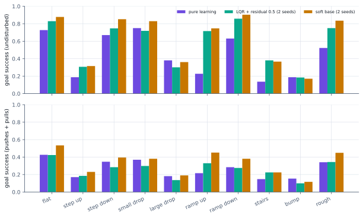
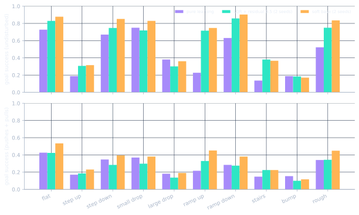
Details and protocol
Half of the training episodes are goal episodes, with 60 percent of goals placed across the terrain feature so that the policy must cross it. Table 2 lists every corrected-engine recipe; the terrain columns show where the goals are lost.
With pushes and pulls every recipe drops to about 0.25 to 0.34.
5 Tracking accuracy and the LQR calibration
Slow tracking is a policy deficiency, not a physical limit
Result. Pure learning reaches 0.60, 0.58 and 0.55 of the command at 0.3, 0.6 and 0.9 m/s. The LQR on the same worlds is 9 to 16 times more accurate at 0.3 and 0.6 m/s, so the robot can do it; the policy does not.
To separate "the robot cannot go faster" from "the policy does not", every controller is run on a perfectly flat world with randomisation off: a constant velocity command at 0.3, 0.6 or 0.9 m/s for 8 s.
Table 1 holds the numbers; Figure 1 draws them.
Clean flat-world tracking benchmark. Engine: Warp GPU (MuJoCo-Warp 3.17, float32), corrected for the S69 stale-subtree-mass error. Domain randomisation: off. Observation noise: off. Worlds per cell: 64 per cell. Seeds: one per row as listed (seeds 0 and 1 where both are shown). Protocol: perfectly flat 24 m world on interior tiles (at least 7.5 m from the map border, the S92 correction), nominal design, constant velocity command at a random heading, 800 control steps, error and achieved/commanded speed averaged over steps 300 to 799 of worlds still upright, falls = share of worlds that fell (eval_battery.py; every flat row re-run after S92). Error is the Euclidean velocity error in m/s. All learned rows are corrected-engine runs. The LQR-alone row is the interior-tile re-measurement of the S92 addendum (source: lqr_flat_interior.log); a dagger marks values taken from the log.
| Controller | 0.3 m/s: err / achieved / falls | 0.6 m/s | 0.9 m/s | Seed |
|---|---|---|---|---|
| LQR alone GPU LQR (lqr_gpu.py): no learning, nominal design | 0.014 / 1.00 / 0.00 | 0.017 / 1.00 / 0.00 | 0.026 / 1.00 / 0.91 | n/a (no learning) |
| pure learning (no LQR), 300M steps g12_pure_s0, seed 0 | 0.130 / 0.60 / 0.00 | 0.260 / 0.58 / 0.00 | 0.406 / 0.55 / 0.00 | seed 0 |
| LQR + residual 0.5, standard randomisation g12_res_s0, seed 0 | 0.031 / 0.93 / 0.00 | 0.056 / 0.94 / 0.00 | 0.064 / 0.98 / 0.02 | seed 0 |
| LQR + residual 0.5, standard randomisation g12_res_s1, seed 1 | 0.025 / 0.95 / 0.00 | 0.038 / 0.97 / 0.00 | 0.048 / 0.99 / 0.00 | seed 1 |
| LQR + residual 0.5, randomisation ramped to 1.75x g12_dr175_s0, seed 0 | 0.027 / 0.95 / 0.00 | 0.046 / 0.97 / 0.00 | 0.057 / 0.99 / 0.02 | seed 0 |
| LQR + residual 0.5, randomisation ramped to 1.75x g12_dr175_s1, seed 1 | 0.013 / 1.00 / 0.00 | 0.021 / 1.00 / 0.00 | 0.041 / 1.02 / 0.00 | seed 1 |
| soft LQR base (R x3, a_max 0.3), ramped to 1.75x g12_soft175_s0, seed 0 | 0.032 / 0.91 / 0.00 | 0.068 / 0.93 / 0.00 | 0.098 / 0.95 / 0.00 | seed 0 |
| soft LQR base (R x3, a_max 0.3), ramped to 1.75x g12_soft175_s1, seed 1 | 0.039 / 0.90 / 0.00 | 0.084 / 0.92 / 0.00 | 0.123 / 0.94 / 0.00 | seed 1 |
| soft LQR base, authority 0.75 g13_softrs075_s0, seed 0 | 0.050 / 0.86 / 0.00 | 0.136 / 0.81 / 0.00 | 0.188 / 0.84 / 0.02 | seed 0 |
| ramped 1.75x, fall penalty 5 (was 2) g14_fp5_s0, seed 0 | 0.027 / 0.95 / 0.00 | 0.044 / 0.98 / 0.02 | 0.062 / 1.01 / 0.00 | seed 0 |
| soft base, fall penalty 5 g14_softfp5_s0, seed 0 | 0.025 / 0.95 / 0.00 | 0.053 / 0.96 / 0.00 | 0.102 / 0.96 / 0.02 | seed 0 |
| ramped 1.75x, push and pull strength ramped 0.2 to 1 g14_pramp_s0, seed 0 | 0.026 / 0.96 / 0.00 | 0.045 / 0.97 / 0.00 | 0.061 / 1.00 / 0.02 | seed 0 |
| ramped 1.75x + edge starts + depth sensor g15_edge_depth_s0, seed 0 | 0.014 / 1.00 / 0.00 | 0.027 / 0.99 / 0.00 | 0.044 / 1.00 / 0.02 | seed 0 |
| ramped 1.75x + edge starts, blind control g15_edge_blind_s0, seed 0 | 0.019 / 0.99 / 0.02 | 0.033 / 0.99 / 0.00 | 0.046 / 1.00 / 0.00 | seed 0 |
| pure learning (no LQR), 300M steps g12_pure_s1, seed 1 | 0.103 / 0.67 / 0.11 | 0.246 / 0.59 / 0.00 | 0.421 / 0.54 / 0.00 | seed 1 |
| ramped 1.75x, trained with the ball retainer (arrestors at 100 deg) g16_ret100_s0, seed 0 | 0.049 / 0.86 / 0.00 | 0.140 / 0.81 / 0.00 | 0.188 / 0.86 / 0.00 | seed 0 |
| ramped 1.75x, trained with the ball retainer (arrestors at 100 deg) g16_ret100_s1, seed 1 | 0.048 / 0.87 / 0.00 | 0.096 / 0.87 / 0.00 | 0.115 / 0.91 / 0.00 | seed 1 |
| pure learning, trained with the retainer g16_pure_ret100_s0, seed 0 | 0.087 / 0.73 / 0.00 | 0.196 / 0.69 / 0.00 | 0.335 / 0.64 / 0.00 | seed 0 |
| pure learning, trained with the retainer g16_pure_ret100_s1, seed 1 | 0.060 / 0.82 / 0.02 | 0.172 / 0.72 / 0.00 | 0.325 / 0.65 / 0.02 | seed 1 |
| retainer, authority 0.5, tracking weight x3 g17_ret100_trk3_s0, seed 0 | 0.039 / 0.88 / 0.00 | 0.177 / 0.74 / 0.00 | 0.201 / 0.84 / 0.00 | seed 0 |
| retainer, authority 0.15 g18_ret_rs015_s0, seed 0 | 0.016 / 0.99 / 0.00 | 0.023 / 1.00 / 0.00 | 0.042 / 1.01 / 0.02 | seed 0 |
| retainer, authority 0.25 (then-recommended) g18_ret_rs025_s0, seed 0 | 0.014 / 0.99 / 0.00 | 0.027 / 1.00 / 0.00 | 0.036 / 1.01 / 0.00 | seed 0 |
| retainer, authority 0.25 (then-recommended) g18_ret_rs025_s1, seed 1 | 0.024 / 0.98 / 0.00 | 0.033 / 0.98 / 0.00 | 0.034 / 1.00 / 0.00 | seed 1 |
| retainer, authority 0.35 g18_ret_rs035_s0, seed 0 | 0.034 / 0.91 / 0.00 | 0.052 / 0.94 / 0.00 | 0.060 / 0.98 / 0.00 | seed 0 |
| retainer, soft LQR base, authority 0.5 g18_ret_soft_s0, seed 0 | 0.074 / 0.76 / 0.00 | 0.196 / 0.69 / 0.00 | 0.266 / 0.72 / 0.00 | seed 0 |
| retainer, authority 0.25 (then-recommended) g18_ret_rs025_s2, seed 2 | 0.039 / 0.90 / 0.00 | 0.043 / 0.97 / 0.00 | 0.049 / 0.99 / 0.00 | seed 2 |
| retainer, authority 0.25, 400M steps g19_ret_rs025_400m_s0, seed 0 | 0.065 / 0.92 / 0.02 | 0.059 / 1.00 / 0.02 | 0.058 / 1.01 / 0.00 | seed 0 |
| retainer, authority 0.25, depth sensor + edge starts g20_ret_rs025_depth_s0, seed 0 | 0.021 / 0.96 / 0.02 | 0.040 / 0.96 / 0.02 | 0.051 / 0.99 / 0.02 | seed 0 |
| retainer, authority 0.25, 12 training designs (adds tau3; 1920 worlds per goal row) g21_ret_rs025_tau3_s0, seed 0 | 0.027 / 0.95 / 0.00 | 0.036 / 0.98 / 0.00 | 0.033 / 1.00 / 0.02 | seed 0 |
| retainer, authority 0.25, 12 training designs (adds tau3; 1920 worlds per goal row) g21_ret_rs025_tau3_s1, seed 1 | 0.033 / 0.94 / 0.00 | 0.039 / 0.99 / 0.00 | 0.041 / 1.01 / 0.00 | seed 1 |
| retainer, authority 0.25, privileged height scan input g22_ret_rs025_scan_s0, seed 0 | 0.030 / 0.92 / 0.00 | 0.037 / 0.97 / 0.00 | 0.054 / 1.00 / 0.00 | seed 0 |
| retainer, authority 0.5, privileged height scan input g22_ret_rs05_scan_s0, seed 0 | 0.036 / 0.90 / 0.00 | 0.079 / 0.87 / 0.00 | 0.104 / 0.89 / 0.00 | seed 0 |
| pure learning, retainer, privileged height scan input g22_pure_ret_scan_s0, seed 0 | 0.078 / 0.76 / 0.00 | 0.195 / 0.68 / 0.00 | 0.356 / 0.61 / 0.02 | seed 0 |
| then-recommended recipe on the corrected contact model (free-rolling friction 0.01; then-recommended checkpoint) g26_ret_rs025_mu01_s0, seed 0 | 0.041 / 0.90 / 0.00 | 0.046 / 0.96 / 0.00 | 0.043 / 0.99 / 0.00 | seed 0 |
| then-recommended recipe on the corrected contact model (free-rolling friction 0.01; then-recommended checkpoint) g26_ret_rs025_mu01_s1, seed 1 | 0.054 / 0.85 / 0.00 | 0.047 / 0.95 / 0.00 | 0.048 / 0.99 / 0.00 | seed 1 |
| then-recommended recipe on the corrected contact model (free-rolling friction 0.01; then-recommended checkpoint) g26_ret_rs025_mu01_s2, seed 2 | 0.034 / 0.93 / 0.00 | 0.040 / 0.98 / 0.00 | 0.044 / 1.00 / 0.00 | seed 2 |
| then-recommended recipe, trained with the planner in the loop (30 % of worlds on blocks tiles) g23_nav_rs025_s0, seed 0 | 0.053 / 0.84 / 0.00 | 0.055 / 0.95 / 0.00 | 0.050 / 0.99 / 0.00 | seed 0 |
| then-recommended recipe, trained with the planner in the loop (30 % of worlds on blocks tiles) g23_nav_rs025_s1, seed 1 | 0.030 / 0.92 / 0.00 | 0.036 / 0.98 / 0.00 | 0.046 / 1.01 / 0.02 | seed 1 |
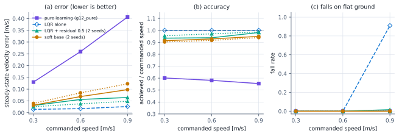
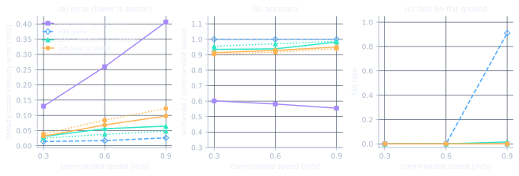
Details and protocol
The two metrics are the steady-state error (the velocity error after the first 3 s) and the achieved speed as a fraction of the command. The yardstick is the LQR alone on the same worlds.
The LQR alone tracks exactly up to 0.6 m/s (error 0.014 and 0.017 m/s, no falls) and fails at 0.9 m/s, where 0.91 of its worlds fall: that is the LQR's speed wall near 1 m/s, and the learned residual is what makes 0.9 m/s trackable (the residual controllers fall 0.00 to 0.02 there while keeping the LQR's accuracy, error 0.031 to 0.064 m/s on seed 0).
Methods note: the flat-benchmark fall column was corrected
Result. The nominal robot was never falling 10 to 25 percent of the time on a flat floor: after the correction the learned controllers fall in 0 to 2 percent of 8 s flat runs, and the 20 s flat base rate, after a second correction (the standing blow-up, chapter 8), is 0.06 to 0.07 driving and 0.02 to 0.04 standing over 11 designs, with the remaining falls on the kb025 and bal4 designs.
Fall rates on the flat benchmark looked odd: they rose with commanded speed on a floor with nothing to trip on. The cause was the map, not the robot.
Details and protocol
The flat benchmark placed its worlds on the tile positions of the normal protocol, which include the border tiles of the 24 m height field, 1.5 m from the edge, and with tile exits disabled a robot driving outward simply left the map and was counted as a fall. A new per-fall position record showed that at 0.3 m/s over 20 s and 11 designs, 74 percent of the recorded falls (0.33 overall) were at the map edge, and at 0.9 m/s for 8 s 100 percent (of 0.23 recorded). The fix places the flat benchmark on interior tiles only, at least 7.5 m from the border, and keeps the edge field in every file. The steady-state error and achieved speed were always computed over surviving worlds and are unaffected; only the fall column changes. The flat rows of every battery were re-run on interior tiles; Table 1 and Figure 1 show the corrected column, in which the then-recommended controller (g18_ret_rs025) does not fall at any speed (its three seeds: 0.00, 0.00 and 0.00 at 0.9 m/s). The re-run is a fresh sample, so its error and achieved-speed values moved by a few thousandths against the earlier files.
The lesson, recorded on the lessons page: record where failures happen.
6 LQR plus a learned residual
The structure that was missing
Result. Against pure learning the residual adds accuracy (Table 1) and goal success (Table 2: 0.58 against 0.48, in 2.5 s against 3.0 s). It does not yet add robustness to pushes and pulls (0.26 against 0.27) or on the tile velocity task.
The residual design puts the LQR underneath the policy: the action sent to the wheels is the LQR's action plus a bounded correction from the policy, clipped to the actuator range.
Details and protocol
The size of that correction is the residual authority; at authority 0 the controller is the plain LQR (Setup, section 5).
Soft base and authority
Result. The soft base buys a small gain in goal success (+0.05 undisturbed, +0.08 with pushes and pulls) at the price of speed (3.1 s against 2.5 s) and a little accuracy at 0.9 m/s. Authority 0.75 is no better (0.58) and tracks worse.
Two knobs were tried before the ball retainer existed: a softer LQR base (control cost times 3, slower reference) and a larger authority. Figure 2 compares authority 0.5 and 0.75 on the soft base.
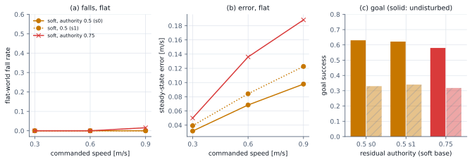
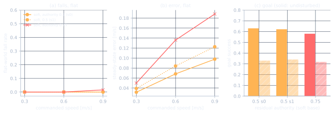
Details and protocol
Neither knob changes the robustness picture.
Seed noise
Result. Goal success differs by at most 0.02 between seeds; differences smaller than that are noise, and the page says so wherever it applies.
Before reading any difference as real, it helps to know how much two identical training runs differ. Figure 4 shows two seeds of three recipes.
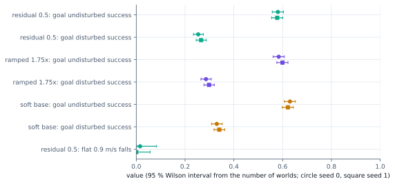
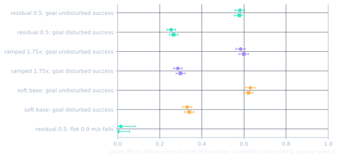
7 Robustness to randomisation and disturbances
Wider training randomisation changes almost nothing
Result. Training over wider ranges changes goal success by at most 0.02 undisturbed and 0.03 disturbed, within seed noise: the standard-range policy is already robust to parameter spread. What does not move is the response to pushes and pulls (about 0.3 for every recipe).
If a policy falls under pushes and pulls, the first idea is to train it on harder conditions. Three recipes were trained: A, the standard randomisation ranges; B, ranges ramped to 1.75 times during training; C, the soft base with the same ramp.
Goal success against randomisation scale, corrected engine. Engine: Warp GPU (MuJoCo-Warp 3.17, float32), corrected for the S69 stale-subtree-mass error. Domain randomisation: on; evaluated at the scale in the column (policies trained at scale 1 or ramped to 1.75). Observation noise: on. Worlds per cell: 1760 per cell. Seeds: one per row as listed. Protocol: goal task of Table 2 at DR scales 1, 1.75 and 2.5 (the master scale multiplies mass, friction, torque, damping, latency and noise ranges, not push or pull strength).
| Policy | Goal success, DR 1: undisturbed / disturbed | DR 1.75 | DR 2.5 | Tile velocity falls, DR 2.5 undisturbed | Seed |
|---|---|---|---|---|---|
| pure learning (no LQR), 300M steps g12_pure_s0, seed 0 | 0.44 / 0.26 | 0.43 / 0.23 | 0.37 / 0.18 | 0.52 | seed 0 |
| LQR + residual 0.5, standard randomisation g12_res_s0, seed 0 | 0.58 / 0.25 | 0.52 / 0.23 | 0.45 / 0.18 | 0.66 | seed 0 |
| LQR + residual 0.5, standard randomisation g12_res_s1, seed 1 | 0.58 / 0.27 | 0.54 / 0.25 | 0.44 / 0.19 | 0.65 | seed 1 |
| LQR + residual 0.5, randomisation ramped to 1.75x g12_dr175_s0, seed 0 | 0.58 / 0.29 | 0.54 / 0.25 | 0.45 / 0.19 | 0.62 | seed 0 |
| LQR + residual 0.5, randomisation ramped to 1.75x g12_dr175_s1, seed 1 | 0.60 / 0.30 | 0.56 / 0.25 | 0.47 / 0.19 | 0.62 | seed 1 |
| soft LQR base (R x3, a_max 0.3), ramped to 1.75x g12_soft175_s0, seed 0 | 0.63 / 0.33 | 0.57 / 0.29 | 0.49 / 0.23 | 0.65 | seed 0 |
| soft LQR base (R x3, a_max 0.3), ramped to 1.75x g12_soft175_s1, seed 1 | 0.62 / 0.34 | 0.58 / 0.29 | 0.52 / 0.24 | 0.63 | seed 1 |
| soft LQR base, authority 0.75 g13_softrs075_s0, seed 0 | 0.58 / 0.32 | 0.53 / 0.26 | 0.45 / 0.21 | 0.66 | seed 0 |
| ramped 1.75x, fall penalty 5 (was 2) g14_fp5_s0, seed 0 | 0.57 / 0.27 | 0.53 / 0.25 | 0.46 / 0.18 | 0.63 | seed 0 |
| soft base, fall penalty 5 g14_softfp5_s0, seed 0 | 0.63 / 0.33 | 0.59 / 0.27 | 0.50 / 0.22 | 0.65 | seed 0 |
| ramped 1.75x, push and pull strength ramped 0.2 to 1 g14_pramp_s0, seed 0 | 0.57 / 0.25 | 0.52 / 0.21 | 0.47 / 0.16 | 0.62 | seed 0 |
| ramped 1.75x + edge starts + depth sensor g15_edge_depth_s0, seed 0 | 0.60 / 0.29 | 0.53 / 0.26 | 0.45 / 0.18 | 0.64 | seed 0 |
| ramped 1.75x + edge starts, blind control g15_edge_blind_s0, seed 0 | 0.60 / 0.28 | 0.54 / 0.23 | 0.47 / 0.19 | 0.61 | seed 0 |
| pure learning (no LQR), 300M steps g12_pure_s1, seed 1 | 0.51 / 0.27 | 0.44 / 0.23 | 0.39 / 0.19 | 0.58 | seed 1 |
| ramped 1.75x, trained with the ball retainer (arrestors at 100 deg) g16_ret100_s0, seed 0 | 0.71 / 0.46 | 0.70 / 0.42 | 0.62 / 0.35 | 0.42 | seed 0 |
| ramped 1.75x, trained with the ball retainer (arrestors at 100 deg) g16_ret100_s1, seed 1 | 0.76 / 0.49 | 0.73 / 0.44 | 0.67 / 0.37 | 0.44 | seed 1 |
| pure learning, trained with the retainer g16_pure_ret100_s0, seed 0 | 0.70 / 0.50 | 0.67 / 0.45 | 0.64 / 0.40 | 0.29 | seed 0 |
| pure learning, trained with the retainer g16_pure_ret100_s1, seed 1 | 0.74 / 0.50 | 0.73 / 0.46 | 0.67 / 0.40 | 0.33 | seed 1 |
| retainer, authority 0.5, tracking weight x3 g17_ret100_trk3_s0, seed 0 | 0.71 / 0.49 | 0.68 / 0.43 | 0.62 / 0.36 | 0.44 | seed 0 |
| retainer, authority 0.15 g18_ret_rs015_s0, seed 0 | 0.69 / 0.35 | 0.65 / 0.31 | 0.56 / 0.22 | 0.45 | seed 0 |
| retainer, authority 0.25 (then-recommended) g18_ret_rs025_s0, seed 0 | 0.71 / 0.42 | 0.68 / 0.36 | 0.60 / 0.29 | 0.44 | seed 0 |
| retainer, authority 0.25 (then-recommended) g18_ret_rs025_s1, seed 1 | 0.76 / 0.43 | 0.72 / 0.39 | 0.66 / 0.32 | 0.46 | seed 1 |
| retainer, authority 0.35 g18_ret_rs035_s0, seed 0 | 0.72 / 0.45 | 0.71 / 0.40 | 0.63 / 0.32 | 0.44 | seed 0 |
| retainer, soft LQR base, authority 0.5 g18_ret_soft_s0, seed 0 | 0.75 / 0.51 | 0.75 / 0.47 | 0.66 / 0.39 | 0.44 | seed 0 |
| retainer, authority 0.25 (then-recommended) g18_ret_rs025_s2, seed 2 | 0.76 / 0.44 | 0.71 / 0.41 | 0.63 / 0.32 | 0.46 | seed 2 |
| retainer, authority 0.25, 400M steps g19_ret_rs025_400m_s0, seed 0 | 0.75 / 0.43 | 0.70 / 0.36 | 0.64 / 0.30 | 0.48 | seed 0 |
| retainer, authority 0.25, depth sensor + edge starts g20_ret_rs025_depth_s0, seed 0 | 0.74 / 0.43 | 0.69 / 0.38 | 0.63 / 0.31 | 0.46 | seed 0 |
| retainer, authority 0.25, 12 training designs (adds tau3; 1920 worlds per goal row) g21_ret_rs025_tau3_s0, seed 0 | 0.71 / 0.41 | 0.66 / 0.36 | 0.58 / 0.29 | 0.45 | seed 0 |
| retainer, authority 0.25, 12 training designs (adds tau3; 1920 worlds per goal row) g21_ret_rs025_tau3_s1, seed 1 | 0.67 / 0.40 | 0.63 / 0.34 | 0.56 / 0.26 | 0.49 | seed 1 |
| retainer, authority 0.25, privileged height scan input g22_ret_rs025_scan_s0, seed 0 | 0.68 / 0.41 | 0.64 / 0.35 | 0.56 / 0.28 | 0.47 | seed 0 |
| retainer, authority 0.5, privileged height scan input g22_ret_rs05_scan_s0, seed 0 | 0.74 / 0.53 | 0.71 / 0.48 | 0.65 / 0.36 | 0.46 | seed 0 |
| pure learning, retainer, privileged height scan input g22_pure_ret_scan_s0, seed 0 | 0.69 / 0.50 | 0.67 / 0.46 | 0.64 / 0.40 | 0.31 | seed 0 |
| then-recommended recipe on the corrected contact model (free-rolling friction 0.01; then-recommended checkpoint) g26_ret_rs025_mu01_s0, seed 0 | 0.74 / 0.45 | 0.72 / 0.41 | 0.68 / 0.33 | 0.38 | seed 0 |
| then-recommended recipe on the corrected contact model (free-rolling friction 0.01; then-recommended checkpoint) g26_ret_rs025_mu01_s1, seed 1 | 0.74 / 0.46 | 0.72 / 0.42 | 0.69 / 0.36 | 0.39 | seed 1 |
| then-recommended recipe on the corrected contact model (free-rolling friction 0.01; then-recommended checkpoint) g26_ret_rs025_mu01_s2, seed 2 | 0.73 / 0.45 | 0.72 / 0.41 | 0.68 / 0.34 | 0.39 | seed 2 |
| then-recommended recipe, trained with the planner in the loop (30 % of worlds on blocks tiles) g23_nav_rs025_s0, seed 0 | 0.71 / 0.43 | 0.67 / 0.39 | 0.61 / 0.31 | 0.46 | seed 0 |
| then-recommended recipe, trained with the planner in the loop (30 % of worlds on blocks tiles) g23_nav_rs025_s1, seed 1 | 0.70 / 0.43 | 0.67 / 0.40 | 0.59 / 0.30 | 0.46 | seed 1 |
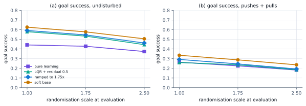
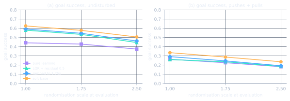
Details and protocol
All were evaluated at randomisation scales 1, 1.75 and 2.5 (the scale multiplies the mass, friction, torque, damping, latency and noise ranges together). Table 4 and Figure 5 show the result.
Disturbance-focused variants: none helped
Result. None improved robustness under pushes and pulls: 0.27, 0.33 and 0.25 against 0.29 and 0.34 for their baselines. The tile velocity task is unchanged (0.54 and 0.73).
Three one-variable changes aimed at the disturbed case were trained: a fall penalty of 5 instead of 2 (on the ramped recipe and on the soft base), and push and pull strength ramped up during training.
Details and protocol
This is not a reward-weighting or curriculum problem, which pointed the search at the mechanics (chapter 8).
Held-out terrain
Result. The policy transfers to unseen terrain layouts with a drop of 0.06 to 0.07 undisturbed and 0.03 to 0.04 disturbed; it has learned the terrain kinds, not the map.
All of the above uses the same 64 tiles in training and evaluation. On a freshly generated map (tile seed 1) the ramped recipe keeps most of its success. Table 5 compares the two maps.
Held-out terrain layout. Engine: Warp GPU (MuJoCo-Warp 3.17, float32), corrected for the S69 stale-subtree-mass error. Domain randomisation: on at scale 1. Observation noise: on. Worlds per cell: 16 per (design, terrain kind): 176 per terrain kind, 1760 per cell. Seeds: seeds 0 and 1 of the recipe. Protocol: goal task of Table 2 on a freshly generated tile map (tile seed 1: new severities and positions, same ten kinds and ranges) while the policy was trained on tile seed 0; undisturbed = pushes and pulls off, disturbed = on.
| Policy | Undisturbed success, tile seed 1 (held out) | tile seed 0 (trained) | Disturbed success, tile seed 1 | tile seed 0 | Median time [s], undisturbed / disturbed | Seed |
|---|---|---|---|---|---|---|
| ramped to 1.75x, standard residual g12_dr175_s0, seed 0 | 0.52 | 0.58 | 0.26 | 0.29 | 2.44 / 2.35 | seed 0 |
| ramped to 1.75x, standard residual g12_dr175_s1, seed 1 | 0.53 | 0.60 | 0.26 | 0.30 | 2.32 / 2.24 | seed 1 |
8 Why it falls, and a ball retainer
The body derails off the ball; a passive retainer stops that
Why it falls
Result. The motors never run out: the wheels sit at their torque limit for only 0.7 percent of the last second before a fall. The robot rarely tips over either.
The simulated robot is two free bodies, the base with its wheels and the ball, held together only by gravity and the three wheel-ball contacts. Logging every world at every step shows what a fall actually is. Table 6 breaks it down.
Why the robot falls. Engine: Warp GPU (MuJoCo-Warp 3.17, float32), corrected for the S69 stale-subtree-mass error. Domain randomisation: on at scale 1. Observation noise: on. Worlds per cell: 1760 (16 per design and terrain kind). Seeds: one policy (g12_dr175_s0, seed 0). Protocol: goal task of Table 2 with per-step logging (fall_cause.py); derailed = the base axis is misaligned with the ball-centre-to-base direction by more than 5 deg (0.1 to 0.3 deg while the wheels sit on the ball).
| Condition | Fall rate | Falls ended by the ball-offset limit (tilt below 70 deg) | Body derailed before tipping | Median tilt when derailing [deg] | Wheels at the torque limit, last 1 s before the fall | Falls with a pull active |
|---|---|---|---|---|---|---|
| undisturbed | 0.43 | 0.95 | 0.78 | 14.7 | 0.7 % | 0.00 |
| pushes + pulls | 0.72 | 0.97 | 0.49 | 15.4 | 0.4 % | 0.58 |
| pushes + pulls, LQR alone (no residual) | 0.85 | 0.98 | 0.98 | not recorded | 0.4 % | 0.71 |
Details and protocol
In 0.78 of undisturbed falls the body derails (the base axis turns more than 5 degrees away from the ball) at a median tilt of only 14.7 degrees, while survivors reach about 12 degrees without derailing. The fix is mechanical, not a better policy.
A ball retainer
Result. Arrestors raise goal success by 0.17 undisturbed and 0.17 with pushes and pulls before any retraining, the first change in the study that moved disturbance robustness. Mounts from 90 to 100 degrees are equal within noise; 100 degrees is chosen because only a mount below the equator can resist lift-off.
The idea comes from the arrestors of ETH Zurich's Rezero ballbot, which hold the ball against the wheels; no design details were published, so the design below is our own.
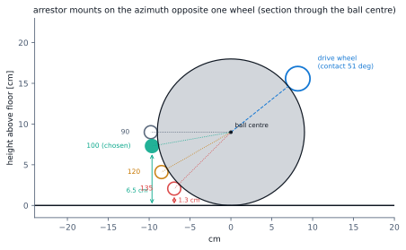
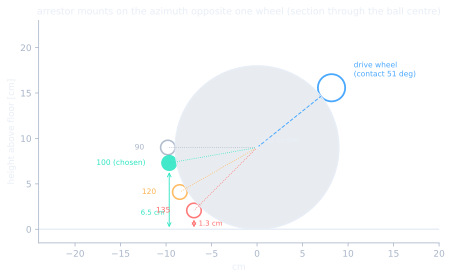
Table 8 adds the arrestors at evaluation to a policy that never trained with them (zero-shot), for several mount angles; Table 9 varies the roller friction.
Arrestor mount angle, zero-shot. Engine: Warp GPU (MuJoCo-Warp 3.17, float32), corrected for the S69 stale-subtree-mass error. Domain randomisation: on at scale 1. Observation noise: on. Worlds per cell: 1760 per cell (176 per terrain kind). Seeds: one policy (g12_dr175_s0, seed 0), trained without arrestors (zero-shot). Protocol: goal task of Table 2 with frictionless arrestors (radius 8 mm) added at evaluation; floor clearance from the geometry R + (R + r_a) cos(phi) - r_a; the floor-touch tilts marked with a dagger are from the study log (S79), and arrestor-floor contact is not simulated.
| Arrestor mount (polar angle from the top of the ball, deg) | Goal success undisturbed | Goal success pushes + pulls | Median misalignment at fall, undisturbed / disturbed [deg] | Arrestor bottom above the floor, upright [cm] | Tilt at which it touches the floor [deg] |
|---|---|---|---|---|---|
| none | 0.57 | 0.28 | 20.6 / 11.4 | n/a | n/a |
| 135 (opposite the wheel) | 0.66 | 0.37 | 7.2 / 4.3 | 1.3 | 21† |
| 120 | 0.69 | 0.39 | 5.4 / 3.2 | 3.3 | n/a |
| 110 | 0.72 | 0.40 | 4.1 / 2.7 | 4.8 | n/a |
| 100 | 0.75 | 0.45 | 3.4 / 1.8 | 6.5 | 57† |
| 95 | 0.75 | 0.43 | 2.6 / 1.8 | 7.3 | n/a |
| 90 (equator) | 0.76 | 0.44 | 2.7 / 1.7 | 8.2 | n/a |
Table 9: Arrestor roller friction
Arrestor roller friction. Engine: Warp GPU (MuJoCo-Warp 3.17, float32), corrected for the S69 stale-subtree-mass error. Domain randomisation: on at scale 1. Observation noise: on. Worlds per cell: 1760 per cell. Seeds: one policy (g12_dr175_s0, seed 0), zero-shot. Protocol: goal task of Table 2, arrestors at 100 deg with the stated sliding friction (0 = ideal ball-transfer unit).
| Arrestor sliding friction | Goal success undisturbed | Goal success pushes + pulls |
|---|---|---|
| 0 | 0.75 | 0.45 |
| 0.05 | 0.74 | 0.42 |
| 0.2 | 0.76 | 0.42 |
Details and protocol
Three passive rollers of radius 8 mm are fixed to the base, one opposite each wheel, at a polar angle \(\phi\) from the top of the ball, placed to just touch the ball at the loaded seat (the robot's resting position after it has settled under gravity). They carry no load while the robot is seated and act only when the body starts to lift or slide. Figure 6 shows the geometry.
Why the LQR model is unchanged. A frictionless contact between two spheres acts along the line of centres, so the force of arrestor \(k\) on the ball points along \(\boldsymbol r_k\), from the ball centre to the contact point, and its moment about the ball centre vanishes:
Such a force does no work on the ball's rotation and is zero while seated, so the equations the LQR is built on are exactly as before; when an arrestor engages it only enforces what the model already assumes, that the body stays on the ball. With the robot upright an arrestor at 100 degrees sits 6.5 cm above the floor; at 135 degrees (directly opposite the wheel) only 1.3 cm, which is not buildable on this ball. Arrestor-floor contact is not simulated.
Roller friction up to 0.2 changes nothing, because seated arrestors carry no load.
Training with the retainer
Result. The retainer is the first change that improves every robustness measure at once: goal success 0.74 undisturbed and 0.47 with pushes and pulls against 0.59 and 0.29, and the tile velocity task, unmoved by every earlier recipe, drops from 0.53 to 0.32 falls. Most of the gain is mechanical (zero-shot gives about the same).
The ramped recipe was retrained with the 100 degree arrestors (two seeds). Table 10 and Figure 7 compare no arrestors, arrestors added at evaluation, and arrestors in training.
Training with the ball retainer. Engine: Warp GPU (MuJoCo-Warp 3.17, float32), corrected for the S69 stale-subtree-mass error. Domain randomisation: on (flat columns: off). Observation noise: on (flat columns: off). Worlds per cell: 1760 per goal and tile cell (176 per terrain kind); 64 per flat cell. Seeds: as listed (two seeds for the trained-with-retainer, ramped and pure rows). Protocol: eval_battery.py; the retainer rows use the 100 deg arrestors in training and evaluation (RETAINER=0,0,0,100), the zero-shot row adds them only at evaluation; its flat row was not part of the S92 re-run, so its flat falls are measured on the old tile positions and overstated (error and achieved speed unaffected).
| Policy | Arrestors | Goal success undisturbed, DR 1 / 1.75 / 2.5 | Goal success pushes + pulls, DR 1 / 1.75 / 2.5 | Tile velocity falls undisturbed / disturbed (DR 1) | Flat error at 0.3 / 0.6 / 0.9 [m/s] | Flat achieved / command |
|---|---|---|---|---|---|---|
| ramped recipe, seed 0 g12_dr175_s0 | none | 0.58 / 0.54 / 0.45 | 0.29 / 0.25 / 0.19 | 0.54 / 0.71 | 0.027 / 0.046 / 0.057 | 0.95 to 0.99 |
| ramped recipe, seed 1 g12_dr175_s1 | none | 0.60 / 0.56 / 0.47 | 0.30 / 0.25 / 0.19 | 0.53 / 0.71 | 0.013 / 0.021 / 0.041 | 1.00 to 1.02 |
| ramped recipe, seed 0 g12_dr175_s0 | added at evaluation (zero-shot) | 0.75 (scale 1 only) | 0.45 (scale 1 only) | 0.36 / 0.53 | 0.030 / 0.046 / 0.067 | 0.96 to 0.99 |
| trained with the retainer, seed 0 g16_ret100_s0 | trained with | 0.71 / 0.70 / 0.62 | 0.46 / 0.42 / 0.35 | 0.31 / 0.49 | 0.049 / 0.140 / 0.188 | 0.81 to 0.86 |
| trained with the retainer, seed 1 g16_ret100_s1 | trained with | 0.76 / 0.73 / 0.67 | 0.49 / 0.44 / 0.37 | 0.32 / 0.50 | 0.048 / 0.096 / 0.115 | 0.87 to 0.91 |
| pure learning, seed 0 g12_pure_s0 | none | 0.44 / 0.43 / 0.37 | 0.26 / 0.23 / 0.18 | 0.32 / 0.54 | 0.130 / 0.260 / 0.406 | 0.55 to 0.60 |
| pure learning, seed 1 g12_pure_s1 | none | 0.51 / 0.44 / 0.39 | 0.27 / 0.23 / 0.19 | 0.38 / 0.57 | 0.103 / 0.246 / 0.421 | 0.54 to 0.67 |
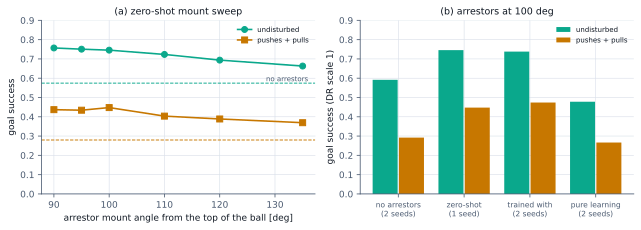
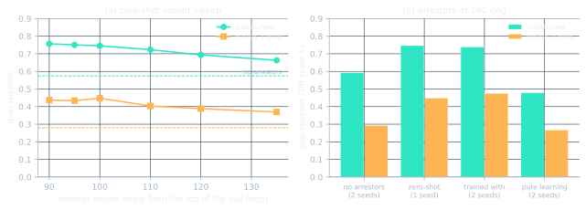
Details and protocol
The cost: training with the arrestors at authority 0.5 made tracking worse (0.81 to 0.91 of the command against 0.95 to 1.02), while the arrestors themselves do not (0.96 to 0.99 zero-shot).
Pure learning with the retainer, and the tracking cost
Result. Pure learning trained with arrestors (two seeds) reaches goal success 0.72 undisturbed and 0.50 with pushes and pulls, with the fewest tile falls of any controller (0.18 and 0.36), but tracks only 0.64 to 0.82 of the command. A tracking weight of 3 on the residual does not recover its tracking either (0.74 to 0.88): the loss is not a reward-weighting problem.
Does the retainer help a policy with no LQR underneath? Yes, even more.
The trade-off is set by the learned authority
Result. Above authority 0.25 tracking falls off (0.91 to 0.98 at 0.35, 0.81 to 0.91 at 0.5) while robustness rises and saturates; below it robustness drops (0.35 with pushes and pulls at 0.15) with no tracking gain. Authority 0.25 is the knee.
With the arrestors in place, the one dial that matters is the residual authority. Table 11 lists every controller and Figure 8 puts them on one plane: tracking accuracy against robustness.
Tracking accuracy against robustness with the retainer. Engine: Warp GPU (MuJoCo-Warp 3.17, float32), corrected for the S69 stale-subtree-mass error. Domain randomisation: on (flat columns: off). Observation noise: on (flat columns: off). Worlds per cell: 1760 per goal and tile cell (176 per terrain kind); 64 per flat cell. Seeds: one per row as listed; authority 0.25 has three seeds (plus a 400M-step run), authority 0.5 and pure learning two. Protocol: eval_battery.py; every row except the two references is trained and evaluated with the 100 deg arrestors; the zero-shot row adds them only at evaluation; its flat row was not part of the S92 re-run, so its flat falls are measured on the old tile positions and overstated (error and achieved speed unaffected).
| Controller | Flat achieved / command (0.3 to 0.9 m/s) | Flat error at 0.9 m/s [m/s] | Goal success undisturbed, DR 1 / 1.75 / 2.5 | Goal success pushes + pulls, DR 1 / 1.75 / 2.5 | Tile velocity falls undisturbed / disturbed (DR 1) | Median goal time [s] |
|---|---|---|---|---|---|---|
| no arrestors (reference) g12_dr175_s0, seed 0 | 0.95 to 0.99 | 0.057 | 0.58 / 0.54 / 0.45 | 0.29 / 0.25 / 0.19 | 0.54 / 0.71 | 2.44 |
| no arrestors (reference) g12_dr175_s1, seed 1 | 1.00 to 1.02 | 0.041 | 0.60 / 0.56 / 0.47 | 0.30 / 0.25 / 0.19 | 0.53 / 0.71 | 2.33 |
| authority 0.5, arrestors added at evaluation only g12_dr175_s0, seed 0 | 0.96 to 0.99 | 0.067 | 0.75 (scale 1 only) | 0.45 (scale 1 only) | 0.36 / 0.53 | n/a |
| authority 0.15 g18_ret_rs015_s0, seed 0 | 0.99 to 1.01 | 0.042 | 0.69 / 0.65 / 0.56 | 0.35 / 0.31 / 0.22 | 0.38 / 0.58 | 2.24 |
| authority 0.25 (then-recommended) g18_ret_rs025_s0, seed 0 | 0.99 to 1.01 | 0.036 | 0.71 / 0.68 / 0.60 | 0.42 / 0.36 / 0.29 | 0.34 / 0.55 | 2.44 |
| authority 0.25 (then-recommended) g18_ret_rs025_s1, seed 1 | 0.98 to 1.00 | 0.034 | 0.76 / 0.72 / 0.66 | 0.43 / 0.39 / 0.32 | 0.35 / 0.56 | 2.50 |
| authority 0.25 (then-recommended) g18_ret_rs025_s2, seed 2 | 0.90 to 0.99 | 0.049 | 0.76 / 0.71 / 0.63 | 0.44 / 0.41 / 0.32 | 0.36 / 0.55 | 2.68 |
| authority 0.25, 400M steps g19_ret_rs025_400m_s0, seed 0 | 0.92 to 1.01 | 0.058 | 0.75 / 0.70 / 0.64 | 0.43 / 0.36 / 0.30 | 0.38 / 0.55 | 2.61 |
| authority 0.35 g18_ret_rs035_s0, seed 0 | 0.91 to 0.98 | 0.060 | 0.72 / 0.71 / 0.63 | 0.45 / 0.40 / 0.32 | 0.34 / 0.52 | 2.73 |
| authority 0.5 g16_ret100_s0, seed 0 | 0.81 to 0.86 | 0.188 | 0.71 / 0.70 / 0.62 | 0.46 / 0.42 / 0.35 | 0.31 / 0.49 | 2.81 |
| authority 0.5 g16_ret100_s1, seed 1 | 0.87 to 0.91 | 0.115 | 0.76 / 0.73 / 0.67 | 0.49 / 0.44 / 0.37 | 0.32 / 0.50 | 2.75 |
| authority 0.5, tracking weight x3 g17_ret100_trk3_s0, seed 0 | 0.74 to 0.88 | 0.201 | 0.71 / 0.68 / 0.62 | 0.49 / 0.43 / 0.36 | 0.32 / 0.46 | 3.10 |
| soft LQR base, authority 0.5 g18_ret_soft_s0, seed 0 | 0.69 to 0.76 | 0.266 | 0.75 / 0.75 / 0.66 | 0.51 / 0.47 / 0.39 | 0.29 / 0.49 | 2.96 |
| pure learning (no LQR) g16_pure_ret100_s0, seed 0 | 0.64 to 0.73 | 0.335 | 0.70 / 0.67 / 0.64 | 0.50 / 0.45 / 0.40 | 0.16 / 0.34 | 2.96 |
| pure learning (no LQR) g16_pure_ret100_s1, seed 1 | 0.65 to 0.82 | 0.325 | 0.74 / 0.73 / 0.67 | 0.50 / 0.46 / 0.40 | 0.19 / 0.38 | 2.62 |
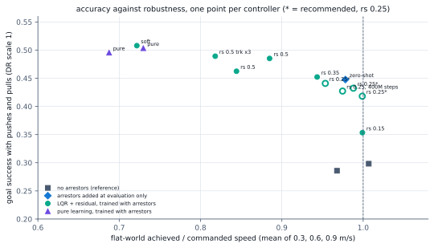
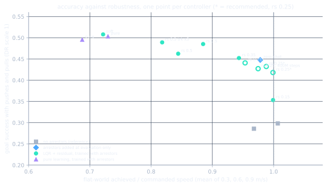
More
It keeps the LQR's speed tracking (achieved 0.90 to 1.01 of the command over three seeds at the training friction 0.001, error at most 0.049 m/s up to 0.9 m/s) and reaches the goal in 0.71, 0.76 and 0.76 of undisturbed worlds and 0.42, 0.43 and 0.44 with pushes and pulls, against 0.59 and 0.29 without arrestors. Training twice as long (400M steps) gives no gain (0.75 and 0.43). Checkpoints. After the contact-model correction (below) the same recipe was retrained at friction 0.01; those three seeds, g26_ret_rs025_mu01, became the recommended checkpoints at that stage: goal success 0.73 to 0.74 undisturbed and 0.45 to 0.46 with pushes and pulls, flat achieved 0.85 to 1.00 of the command (error at most 0.054 m/s), every seed within 0.03 of the others. On a 15 s obstacle course, with and without a speed layer, the two families are equal on the same contact model (S102). The g18 numbers in this chapter remain valid 8 s comparisons at 0.001. Known weakness, from a single clip below: at 0.6 m/s up an 11 degree ramp it lags the command and falls. Later update: the recipe was extended with a motion layer, adaptive authority and a goal dead band (checkpoints g34, chapter 10b) and then with the goal logic on the true ball centre (g39_goalcentre_s0, chapter 10c), which is the recommended controller now.
The retainer on held-out terrain
Result. The gain holds on unseen terrain: the then-recommended controller (g18_ret_rs025) reaches 0.66 and 0.69 undisturbed and 0.38 and 0.39 with pushes and pulls, against 0.52 and 0.26 without arrestors.
Table 12 repeats the held-out-map test of chapter 7 for the retainer controllers.
The retainer on held-out terrain. Engine: Warp GPU (MuJoCo-Warp 3.17, float32), corrected for the S69 stale-subtree-mass error. Domain randomisation: on at scale 1. Observation noise: on. Worlds per cell: 176 per terrain kind, 1760 per cell. Seeds: as listed. Protocol: goal task of Table 2 on a freshly generated tile map (tile seed 1); policies were trained on tile seed 0; the retainer rows run with the 100 deg arrestors.
| Policy | Undisturbed success, held-out map (tile seed 1) | trained map (tile seed 0) | Pushes + pulls success, held-out map | trained map |
|---|---|---|---|---|
| then-recommended: LQR + residual 0.25, trained with the retainer g18_ret_rs025_s0, seed 0 | 0.66 | 0.71 | 0.38 | 0.42 |
| then-recommended: LQR + residual 0.25, trained with the retainer g18_ret_rs025_s1, seed 1 | 0.69 | 0.76 | 0.39 | 0.43 |
| LQR + residual 0.5, trained with the retainer g16_ret100_s0, seed 0 | 0.66 | 0.71 | 0.42 | 0.46 |
| LQR + residual 0.5, trained with the retainer g16_ret100_s1, seed 1 | 0.68 | 0.76 | 0.43 | 0.49 |
| pure learning, trained with the retainer g16_pure_ret100_s0, seed 0 | 0.66 | 0.70 | 0.46 | 0.50 |
| pure learning, trained with the retainer g16_pure_ret100_s1, seed 1 | 0.71 | 0.74 | 0.47 | 0.50 |
| no arrestors (reference) g12_dr175_s0, seed 0 | 0.52 | 0.58 | 0.26 | 0.29 |
| no arrestors (reference) g12_dr175_s1, seed 1 | 0.53 | 0.60 | 0.26 | 0.30 |
Where it still falls
Result. Bumps (0.76), large drops (0.65), step ups (0.62) and stairs (0.50) are the problem; flat tiles (0.08) and ramps (0.13) are not. A raw depth sensor learned end to end does not reduce them (chapter 12).
The remaining falls of the then-recommended controller (g18_ret_rs025) are on discrete obstacles. Table 13 sorts the terrain kinds by fall rate.
Where the then-recommended controller still falls. Engine: Warp GPU (MuJoCo-Warp 3.17, float32), corrected for the S69 stale-subtree-mass error. Domain randomisation: on at scale 1. Observation noise: on. Worlds per cell: 176 per terrain kind. Seeds: as in the column headers. Protocol: velocity task at 0.3 m/s on the tiles, undisturbed (pushes and pulls off), 100 deg arrestors; fall rate per terrain kind, sorted by the seed-0 value.
| Terrain kind | then-recommended, seed 0 (g18_ret_rs025_s0) | then-recommended, seed 1 (g18_ret_rs025_s1) | then-recommended + depth sensor, seed 0 (g20_ret_rs025_depth_s0) |
|---|---|---|---|
| flat | 0.08 | 0.07 | 0.08 |
| ramp up | 0.12 | 0.14 | 0.11 |
| step down | 0.16 | 0.16 | 0.19 |
| rough | 0.17 | 0.16 | 0.23 |
| small drop | 0.18 | 0.17 | 0.22 |
| ramp down | 0.20 | 0.26 | 0.24 |
| stairs | 0.48 | 0.52 | 0.51 |
| step up | 0.61 | 0.62 | 0.55 |
| large drop | 0.64 | 0.66 | 0.68 |
| bump | 0.77 | 0.74 | 0.75 |
Feature size sets these falls; speed matters too, as a later correction showed. An earlier reading that slower was safer turned out to be an exposure artefact (short episodes in which slow robots never reached the feature; see the lessons page), and that lesson stands.
Table 14: Falls against commanded speed
Falls against commanded speed. Engine: Warp GPU (MuJoCo-Warp 3.17, float32), corrected for the S69 stale-subtree-mass error. Domain randomisation: on at scale 1. Observation noise: on. Worlds per cell: 176 per terrain kind (1760 per row). Seeds: one policy (g18_ret_rs025_s1, seed 1). Protocol: velocity task on the tiles, undisturbed, arrestors on, 20 s episodes so that every robot reaches the terrain feature (eval_governor.py with no governor); fall rate per kind.
| Commanded speed | All tiles | step up | bump | large drop | stairs | flat |
|---|---|---|---|---|---|---|
| 0.1 m/s | 0.42 | 0.64 | 0.64 | 0.80 | 0.55 | 0.15 |
| 0.2 m/s | 0.41 | 0.66 | 0.80 | 0.73 | 0.56 | 0.08 |
| 0.3 m/s | 0.37 | 0.64 | 0.74 | 0.66 | 0.52 | 0.10 |
Table 15: Falls against feature size
Falls against feature size. Engine: Warp GPU (MuJoCo-Warp 3.17, float32), corrected for the S69 stale-subtree-mass error. Domain randomisation: on at scale 1. Observation noise: on. Worlds per cell: 352 per kind (two tile maps' worth of worlds, split into halves by severity). Seeds: one policy (g18_ret_rs025_s1, seed 1). Protocol: velocity task at 0.3 m/s on the tiles, undisturbed, arrestors on, 20 s episodes; worlds split at the median drawn severity of their tile.
| Feature | Severity range on the map | Split | Falls, smaller half | Falls, larger half |
|---|---|---|---|---|
| step up | 1.1 to 5.9 cm | 2.3 cm | 0.40 | 0.95 |
| bump | 1.4 to 3.6 cm | 2.4 cm | 0.59 | 0.90 |
| stairs (riser) | 1.2 to 3.2 cm | 1.4 cm | 0.27 | 0.70 |
| large drop | 10.9 to 18.3 cm | 15.1 cm | 0.61 | 0.77 |
| small drop | 3.1 to 5.8 cm | 4.4 cm | 0.23 | 0.34 |
| step down | 1.2 to 5.5 cm | 2.6 cm | 0.12 | 0.21 |
| ramp up | 3.5 to 11.2 deg | 9.6 deg | 0.15 | 0.12 |
| ramp down | 5.2 to 11.9 deg | 8.5 deg | 0.28 | 0.29 |
What this means. On the old contact model, slowing from 0.3 to 0.1 m/s did not reduce falls (0.37 and 0.42 overall) and a speed governor that slows the robot near a discontinuity barely helped (0.39 to 0.37); both readings were partly the standing blow-up (a creeping or slowed robot is nearly stationary, the blow-up condition; see the correction below) and are superseded by Tables 35 and 36.
Details and protocol
With 20 s episodes, Table 14 varies the speed and Table 15 splits each feature at its median size. Table 14 was measured on the old contact model (friction 0.001) and is superseded on the speed question by Table 35 below; the size split of Table 15 was re-checked on the corrected model and holds.
The size dependence is not: Step ups above 2.3 cm fail in 0.95 of worlds against 0.40 below; bumps above 2.4 cm in 0.90. Up-steps and bumps above about a quarter of the ball radius are nearly always fatal at any speed.
Correction: speed does matter on the corrected contact model
Result. On the corrected model falls rise monotonically with commanded speed, from 0.28 at 0.1 m/s to 0.51 at 0.9 m/s, and every robot still reaches its feature in 20 s. The old reading was inflated most at 0.1 m/s (0.42 against 0.28), because a creeping robot spends most of the episode nearly stationary.
After the friction correction of the standing test (below, "Correction: the 20 s standing falls were a simulator blow-up"), the speed test of Table 14 was re-run on the corrected contact model.
Falls against commanded speed on the corrected contact model. Engine: Warp GPU (MuJoCo-Warp 3.17, float32), corrected for the S69 stale-subtree-mass error; wheel-ball free-rolling friction 0.01 (S98), policy trained at 0.001. Domain randomisation: on at scale 1. Observation noise: on. Worlds per cell: 176 per terrain kind (1760 per row). Seeds: one policy (g18_ret_rs025_s1, seed 1). Protocol: the Table 14 protocol: velocity task on the tiles, undisturbed, arrestors on, 20 s episodes so that every robot reaches its feature (eval_governor.py with no governor; files speed_mu01_*.json); fall rate per kind; the last column repeats Table 14 at 0.001.
| Commanded speed | All tiles | step up | bump | large drop | stairs | flat | All tiles at 0.001 (Table 14, superseded) |
|---|---|---|---|---|---|---|---|
| 0.1 m/s | 0.28 | 0.46 | 0.54 | 0.74 | 0.43 | 0.06 | 0.42 |
| 0.2 m/s | 0.34 | 0.61 | 0.73 | 0.72 | 0.48 | 0.05 | 0.41 |
| 0.3 m/s | 0.35 | 0.62 | 0.74 | 0.66 | 0.49 | 0.06 | 0.37 |
| 0.6 m/s | 0.40 | 0.54 | 0.66 | 0.77 | 0.51 | 0.11 | not run |
| 0.9 m/s | 0.51 | 0.62 | 0.66 | 0.83 | 0.62 | 0.23 | not run |
If speed matters, slowing down before a feature should buy something.
A terrain-aware speed layer, given time to reach the feature. Engine: Warp GPU (MuJoCo-Warp 3.17, float32), corrected for the S69 stale-subtree-mass error; wheel-ball free-rolling friction 0.01 (the policy's own training value, recorded in each file). Domain randomisation: on at scale 1. Observation noise: on. Worlds per cell: 176 per terrain kind (1760 per row). Seeds: one policy (g26_ret_rs025_mu01_s1, a then-recommended checkpoint), one evaluation seed. Protocol: velocity task at 0.3 m/s on the tiles, undisturbed, arrestors on, 40 s episodes so that a slowed robot still reaches its feature, tile seed 0; governor.py slow mode, which lowers the commanded speed to 0.05 m/s within 0.25 m of a rise above 2.4 cm or a drop above 8 cm, read from the perfect height map or from the ToF estimate; files gov_vel03_ps0_{none,oracle_v005,tof18_v005}_40s.json. An earlier 15 s version of this test (S100 to S102) let slowed robots run out of time before their feature and is superseded.
| Speed layer (g26 seed 1) | Falls, all tiles | step up | bump | stairs | large drop | flat | Tile exit reached | Progress |
|---|---|---|---|---|---|---|---|---|
| no speed layer | 0.38 | 0.62 | 0.79 | 0.56 | 0.72 | 0.11 | 0.62 | 1.35 m |
| perfect height map, slow to 0.05 m/s near a discontinuity (upper bound) | 0.33 | 0.61 | 0.72 | 0.43 | 0.74 | 0.07 | 0.58 | 1.31 m |
| ToF sensor (18 x 14 zones) through a learned height estimator, slow to 0.05 m/s | 0.35 | 0.61 | 0.78 | 0.47 | 0.77 | 0.09 | 0.54 | 1.28 m |
What this means. Given time to reach the feature, the slowed robot falls almost as often: 0.38 with no layer, 0.33 with the perfect map and 0.35 with the ToF sensor, a real effect of only 0.03 to 0.05 of obstacle falls, mostly on stairs (0.56 to 0.43 and 0.47) and bumps (0.79 to 0.72 and 0.78; step ups, drops and flat tiles within 0.05), at a cost of 0.04 to 0.08 in tile exits reached.
The S88 by-size test re-run at 0.01 is unchanged within 0.11 (S99 addendum), and chapter 9 already uses the corrected model.
Details and protocol
Table 35 is the result, with the superseded numbers beside it.
Size still dominates: at 0.1 m/s a step in the larger half of the range still fells most robots (Table 15 and the by-size re-check of chapter 9). So the earlier sentence "obstacle falls do not depend on approach speed" is withdrawn; "they depend mostly on size" stands.
Table 36 tests a terrain-aware speed layer on the g26_ret_rs025_mu01 checkpoints: a governor that lowers the commanded speed to 0.05 m/s near a discontinuity, read from the perfect height map (the upper bound) or from the head ToF sensor through a learned height estimator, with 40 s episodes so that a slowed robot still reaches its feature.
The goal task with 30 s episodes agrees: 0.24 falls and 0.76 success with no layer, 0.23 and 0.62 with the ToF layer slowing to 0.05 m/s, 0.25 and 0.74 slowing to 0.1 m/s. An earlier 15 s version of this test appeared to halve obstacle falls; that was an exposure artefact, because the slowed robots had not yet reached their feature (S86's lesson a second time, S103). The ToF height estimator itself is accurate (precision 0.73† and recall 0.85† for the discontinuities the governor reacts to). The conclusion: obstacle falls are set by obstacle size against ball size, and the tools that work are routing around what cannot be crossed (chapter 10) and a larger ball (chapter 9); a speed layer is not worth a hardware sensor on its own. A gap between the two checkpoint families reported briefly in S101 was a separate evaluation bug, also fixed (S102).
A traction limit, and what foresight can and cannot do
Result. The larger ball crosses what the small one cannot (large step-up falls 0.98 to 0.80, large bumps 0.94 to 0.62) with a controller that never trained on it, while drops change little. A perfect height scan of the ground ahead, given straight to the policy, does not reduce obstacle falls (0.59 against 0.61 blind).
A simple model says why.
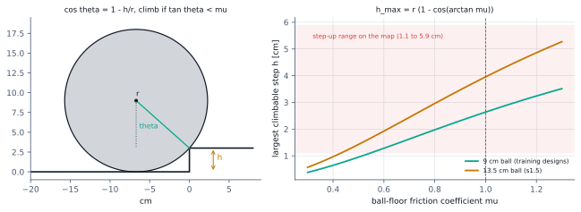
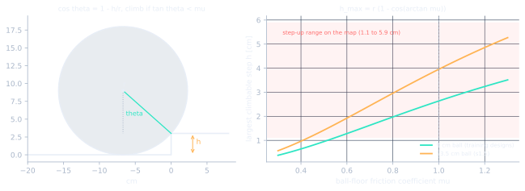
Three tests check the model: a larger ball (Table 16), a perfect height map given to the policy (Table 17), and why pure learning falls less on obstacles (Table 18).
Ball size against step height. Engine: Warp GPU (MuJoCo-Warp 3.17, float32), corrected for the S69 stale-subtree-mass error. Domain randomisation: on at scale 1. Observation noise: on. Worlds per cell: 640 per terrain kind (64 per kind and design copy, two copies), split into halves by severity. Seeds: one policy (g18_ret_rs025_s1, seed 1), trained on 9 cm-ball designs. Protocol: velocity task at 0.3 m/s on the tiles, undisturbed, arrestors on, 20 s episodes (eval_governor.py with --eval-designs nom,nom against s1.5,s1.5).
| Feature | Smaller half / larger half of the severity range | Falls, nominal (9 cm ball): smaller / larger | Falls, s1.5 (13.5 cm ball, unseen design): smaller / larger |
|---|---|---|---|
| step up | 1.1 to 2.3 / 2.3 to 5.9 cm | 0.40 / 0.98 | 0.26 / 0.80 |
| bump | 1.4 to 2.4 / 2.4 to 3.6 cm | 0.52 / 0.94 | 0.33 / 0.62 |
| stairs (riser) | 1.2 to 1.4 / 1.4 to 3.2 cm | 0.17 / 0.67 | 0.19 / 0.64 |
| large drop | 10.9 to 15.1 / 15.1 to 18.3 cm | 0.64 / 0.83 | 0.62 / 0.72 |
Table 17: A perfect height map ahead, as policy input
A perfect height map ahead, as policy input. Engine: Warp GPU (MuJoCo-Warp 3.17, float32), corrected for the S69 stale-subtree-mass error. Domain randomisation: on at scale 1. Observation noise: on. Worlds per cell: 1760 per goal and tile cell, 176 per terrain kind. Seeds: one per row as listed (scan arms one seed each). Protocol: eval_battery.py; the scan arms add the privileged 7 x 5 height scan ahead as a policy input (the upper bound for any terrain sensor); per-kind columns are falls in the 8 s velocity task at 0.3 m/s, undisturbed.
| Policy (all with the retainer) | Goal success undisturbed / disturbed (DR 1) | Tile velocity falls, undisturbed | step up falls | bump falls | stairs falls | large drop falls |
|---|---|---|---|---|---|---|
| residual 0.25 + scan g22_ret_rs025_scan_s0, seed 0 | 0.68 / 0.41 | 0.36 | 0.59 | 0.78 | 0.51 | 0.70 |
| residual 0.25, blind g18_ret_rs025_s0, seed 0 | 0.71 / 0.42 | 0.34 | 0.61 | 0.77 | 0.48 | 0.64 |
| residual 0.5 + scan g22_ret_rs05_scan_s0, seed 0 | 0.74 / 0.53 | 0.32 | 0.55 | 0.71 | 0.45 | 0.63 |
| residual 0.5, blind g16_ret100_s0, seed 0 | 0.71 / 0.46 | 0.31 | 0.53 | 0.56 | 0.42 | 0.68 |
| residual 0.5, blind g16_ret100_s1, seed 1 | 0.76 / 0.49 | 0.32 | 0.54 | 0.65 | 0.43 | 0.68 |
| pure learning + scan g22_pure_ret_scan_s0, seed 0 | 0.69 / 0.50 | 0.15 | 0.29 | 0.24 | 0.19 | 0.38 |
| pure learning, blind g16_pure_ret100_s0, seed 0 | 0.70 / 0.50 | 0.16 | 0.24 | 0.20 | 0.20 | 0.43 |
| pure learning, blind g16_pure_ret100_s1, seed 1 | 0.74 / 0.50 | 0.19 | 0.31 | 0.30 | 0.25 | 0.45 |
Table 18: Pure learning stalls in front of large obstacles; it does not climb them
Pure learning stalls in front of large obstacles; it does not climb them. Engine: Warp GPU (MuJoCo-Warp 3.17, float32), corrected for the S69 stale-subtree-mass error. Domain randomisation: on at scale 1. Observation noise: on. Worlds per cell: 640 per terrain kind, halved by severity. Seeds: one policy each (seed 1). Protocol: velocity task at 0.3 m/s on the tiles, undisturbed, arrestors on, 20 s episodes; crossed = left the tile upright past the feature.
| Feature (larger half of the range) | Pure learning, retainer (g16_pure_ret100_s1): falls / crossed | LQR + residual 0.25, retainer (g18_ret_rs025_s1): falls / crossed |
|---|---|---|
| step up, larger half (2.3 to 5.9 cm) | 0.69 / 0.02 | 0.98 / 0.02 |
| bump, larger half (2.4 to 3.6 cm) | 0.30 / 0.02 | 0.94 / 0.06 |
| stairs (riser), larger half (1.4 to 3.2 cm) | 0.38 / 0.03 | 0.67 / 0.33 |
| large drop, larger half (15.1 to 18.3 cm) | 0.58 / 0.39 | 0.83 / 0.17 |
Details and protocol
A driven ball of radius \(r\) against a step of height \(h\) must pivot on the edge; the contact normal makes an angle \(\theta\) with the vertical, and rolling over needs a tangential-to-normal force ratio of \(\tan\theta\), which friction can supply only up to \(\mu\):
This traction limit is 2.6 cm for the 9 cm ball and 4.0 cm for the 13.5 cm ball of the larger design, and it matches the measured split above. Figure 9 draws it.
Pure learning falls less on large obstacles (0.69 against 0.98) but crosses them no more often (0.02): it stalls in front of them. On this map the falls above the traction limit are a physical limit of ball size and friction that no foresight changes; below it, slowing before a feature buys only 0.03 to 0.05, mostly on stairs (Table 36); chapter 10 tests what sensing can do where there is a way around.
Correction: the 20 s standing falls were a simulator blow-up
Result. Standing still for 20 s is no longer a seed lottery (0.02 and 0.04 overall on the two seeds), the heavy-ball designs kb4 and bal025 stand at 0.00 and 0.00, and driving at 0.3 m/s falls 0.06 to 0.07. What remains is real and design specific: the quarter-mass ball (kb025) unseats in 0.24 to 0.29 of standing worlds and 0.48 to 0.54 of driving worlds, and the four-times base mass (bal4) falls in 0.18 to 0.23 of driving worlds.
More
Why it was wrong. The wheel-ball contact pairs use anisotropic friction: 0.001 along the roller axis (free rolling) and 1.0 across it. In the float32 GPU engine that 1000 to 1 elliptic friction cone is ill-conditioned, and when the robot stands nearly still the state becomes non-finite in a single 10 ms step, mostly on the designs with a heavy ball relative to the body (kb4, bal025, zeta66). The training termination counts a non-finite state as a fall, so these entered every 20 s standing number: on the worst seed, 91 percent† of the standing "falls" were neither a tip nor an unseating but robots upright at 1 to 2 degrees of tilt whose state turned non-finite. Driving at 0.3 m/s was barely affected and the 8 s battery not at all, because the blow-up needs a near-stationary wheel-ball contact. Contact buffers, the solver, warm starts, iteration counts, the arrestors, randomisation and the height field were all ruled out†. Raising the free-rolling coefficient to 0.01 removes it (0 non-finite worlds of 880 against 0.127† at 0.001, with the real falls unchanged), and 0.01 is the model default from here. Table 34 re-measures the two seeds at 0.01; the policies themselves were trained at 0.001. Full record: study log entry S98 (daggers: values from the log's diagnostic runs, no site data file).
Standing and driving for 20 s after the friction correction. Engine: Warp GPU (MuJoCo-Warp 3.17, float32), corrected for the S69 stale-subtree-mass error; wheel-ball free-rolling friction 0.01 for every row (the first two policies were trained at 0.001 and are evaluated at 0.01 through PAIR_MU1; the retrained ones carry 0.01 in args.json; the value is recorded in each file's env_settings). Domain randomisation: on at scale 1. Observation noise: on. Worlds per cell: 32 per design (352 per cell). Seeds: seeds 1 and 2 of the then-recommended recipe (seed 0 not re-measured) and the seeds of the recipe retrained at 0.01 that are evaluated so far, one evaluation seed each. Protocol: flat interior tiles (at least 7.5 m from the map border), 20 s episodes, arrestors on, no pushes or pulls; zero command (standing) or 0.3 m/s at a random heading (driving); no fall was at the map edge; a non-finite state is counted separately where the file records it (new evaluations only) and is 0.000 in every such row.
| Policy | Standing still for 20 s at friction 0.01, falls: all 11 designs / kb025 / bal4 / kb4 / bal025 / zeta66 / nominal | Driving at 0.3 m/s for 20 s at 0.01, falls: all / kb025 / bal4 / kb4 / bal025 / zeta66 / nominal | Non-finite worlds (fraction) |
|---|---|---|---|
| then-recommended controller, seed 1 (trained at 0.001) g18_ret_rs025_s1 | 0.03 / 0.24 / 0.05 / 0.00 / 0.00 / 0.00 / 0.00 | 0.06 / 0.50 / 0.18 / 0.00 / 0.00 / 0.00 / 0.00 | not recorded |
| then-recommended controller, seed 2 (trained at 0.001) g18_ret_rs025_s2 | 0.04 / 0.29 / 0.13 / 0.00 / 0.00 / 0.00 / 0.00 | 0.07 / 0.54 / 0.23 / 0.00 / 0.00 / 0.00 / 0.02 | not recorded |
| same recipe retrained at 0.01, seed 0 g26_ret_rs025_mu01_s0 | 0.03 / 0.27 / 0.04 / 0.00 / 0.00 / 0.00 / 0.00 | 0.06 / 0.48 / 0.20 / 0.00 / 0.00 / 0.00 / 0.00 | 0.000 |
| same recipe retrained at 0.01, seed 1 g26_ret_rs025_mu01_s1 | 0.03 / 0.28 / 0.06 / 0.00 / 0.00 / 0.00 / 0.00 | 0.07 / 0.53 / 0.22 / 0.00 / 0.00 / 0.00 / 0.00 | 0.000 |
| same recipe retrained at 0.01, seed 2 g26_ret_rs025_mu01_s2 | 0.02 / 0.24 / 0.04 / 0.00 / 0.00 / 0.00 / 0.00 | 0.06 / 0.49 / 0.21 / 0.00 / 0.00 / 0.00 / 0.00 | 0.000 |
g26_ret_rs025_mu01 seeds 0, 1 and 2 replace g18_ret_rs025 seeds 0, 1 and 2. The recipe is unchanged (LQR plus residual at authority 0.25, arrestors, 11 designs, randomisation ramped to 1.75, 8 s episodes); only the contact model is corrected, and they are the only family with a reproducible standing number. Their standard battery (Tables 1 and 2, rows "corrected contact model"): goal success 0.73 to 0.74 undisturbed and 0.45 to 0.46 with pushes and pulls at randomisation scale 1, 0.72 / 0.41 to 0.42 at 1.75 and 0.68 to 0.69 / 0.33 to 0.36 at 2.5; tile velocity falls 0.34 undisturbed and 0.51 to 0.53 disturbed; flat achieved 0.85 to 0.93 at 0.3 m/s, 0.95 to 0.98 at 0.6 and 0.99 to 1.00 at 0.9 with falls 0.00; standing 20 s 0.025 to 0.030 and driving 0.062 to 0.068 with no non-finite world; every seed within 0.03 of the others, at or above the g18 seeds on every battery cell, and equal to them on the obstacle course with a speed layer on the same contact model (Table 36: seed 1 of each family, 0.37 against 0.35 without and 0.16 against 0.17 with the governor). A gap between the families reported briefly in S101 was an evaluation bug, now fixed: the governor script did not apply a run's own free-rolling friction, so the g26 rows had been evaluated at 0.001 (S102). The g18 numbers remain valid comparisons for every 8 s result and for driving; their standing numbers are void. In these tables "then-recommended" means g18_ret_rs025 or, on the corrected contact model, g26_ret_rs025_mu01; each place says which. The current recommendation is g39_goalcentre_s0 (S121).Details and protocol
These two are the controller's genuine weak designs, and the only standing or flat-driving numbers that survive the correction. The recipe retrained at 0.01 reproduces them (standing 0.02 to 0.03, driving 0.06 to 0.07, non-finite 0.000 on the seeds evaluated so far), so they are properties of the recipe at these mass extremes, not of training noise or of the old contact model.
9 Ball size against step size
The ball radius sets the step a ballbot can climb
Result. Up-step and bump falls fall monotonically with ball radius, in step with the traction limit: the taller step band (2.3 to 5.9 cm) is fatal for the 6.75 cm ball (1.00), nearly fatal for the 9 cm ball (0.94), and survivable for the 13.5 and 18 cm balls (0.61, 0.58), whose limits (4.0 and 5.3 cm) cover most of that band.
Chapter 8 ended with a prediction: a driven ball cannot climb a step taller than about 0.29 times its radius when ball-floor friction is near 1, and the 13.5 cm ball of an unseen design crossed steps the 9 cm ball could not.
Table 30 gives the fall rate on the smaller and larger half of each feature range, per robot size (mean of the two seeds; the last column shows each seed), next to the predicted traction limit.
Five robot sizes against the same obstacles. Engine: Warp GPU (MuJoCo-Warp 3.17, float32), corrected for the S69 stale-subtree-mass error. Domain randomisation: on at scale 1 (floor friction 0.4 to 1.2 by surface class). Observation noise: on. Worlds per cell: 128 per terrain kind, robot scale and seed (1280 per scale and seed), split into halves at the midpoint of each feature's drawn range. Seeds: two training seeds of one recipe (g24_scale_rs025_s0, g24_scale_rs025_s1), the then-recommended recipe trained on the 11 designs plus the robot at 0.75, 1.5 and 2 times nominal size (14 designs); cells are the mean of the two seeds (the last column gives each seed); the 0.5 scale was never trained on and was evaluated with seed 0 only, at friction 0.001. Protocol: velocity task at 0.3 m/s Froude-scaled (times the square root of the scale) on the tiles, undisturbed, arrestors re-fitted per scale, 20 s episodes, tile seed 0; feature sizes are the same absolute sizes for every robot (eval_governor.py --source none --eval-designs); evaluated at wheel-ball free-rolling friction 0.01 (S98) with policies trained at 0.001 (files stepsize_mu01_*.json).
| Robot scale | Ball radius | Predicted limit 0.29 r | Step up, falls: 1.1 to 2.3 / 2.3 to 5.9 cm | Bump: 1.4 to 2.4 / 2.4 to 3.6 cm | Stairs riser: below / above 1.4 cm | Large drop: 10.9 to 15.1 / 15.1 to 18.3 cm | Flat | All ten tile kinds | All ten tile kinds, per seed |
|---|---|---|---|---|---|---|---|---|---|
| 0.5 (held out, not trained); at friction 0.001 only | 4.5 cm | 1.3 cm | 0.90 / 1.00 | 0.98 / 1.00 | 0.94 / 1.00 | 0.98 / 0.98 | 0.90 | 0.95 | 0.95 (seed 0 only) |
| 0.75 | 6.75 cm | 2.0 cm | 0.49 / 1.00 | 0.77 / 0.99 | 0.34 / 0.82 | 0.84 / 0.89 | 0.13 | 0.46 | 0.46 | 0.46 |
| 1 (nominal) | 9 cm | 2.6 cm | 0.33 / 0.94 | 0.68 / 0.95 | 0.16 / 0.68 | 0.59 / 0.84 | 0.03 | 0.32 | 0.31 | 0.34 |
| 1.5 | 13.5 cm | 4.0 cm | 0.25 / 0.61 | 0.37 / 0.50 | 0.12 / 0.45 | 0.35 / 0.48 | 0.00 | 0.21 | 0.20 | 0.21 |
| 2 | 18 cm | 5.3 cm | 0.17 / 0.58 | 0.26 / 0.41 | 0.08 / 0.29 | 0.23 / 0.27 | 0.00 | 0.13 | 0.13 | 0.13 |
The halves are coarse. Figure 10 and Table 31 use the recorded height of every world's feature, both seeds pooled, to draw the fall curve against step height for each ball; the bars in the figure show how far the two seeds are apart.
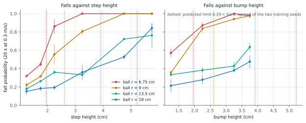
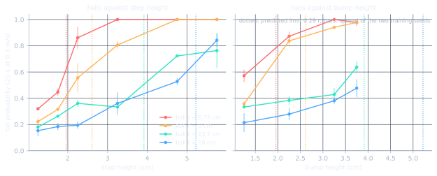
Table 31: Falls against step and bump height in 1 cm bins, by ball radius
Falls against step and bump height in 1 cm bins, by ball radius. Engine: Warp GPU (MuJoCo-Warp 3.17, float32), corrected for the S69 stale-subtree-mass error. Domain randomisation: on at scale 1 (floor friction 0.4 to 1.2). Observation noise: on. Worlds per cell: 36 to 128 per bin (the per-world feature heights of Table 30, binned, both seeds pooled). Seeds: 2 training seeds of the scale recipe (g24_scale_rs025_s0, g24_scale_rs025_s1). Protocol: as Table 30, evaluated at wheel-ball free-rolling friction 0.01 (S98); fall probability per 1 cm band of feature height.
| Ball radius (predicted limit) | step up 1 to 2 cm | step up 2 to 3 cm | step up 3 to 4 cm | step up 4 to 5 cm | step up 5 to 6 cm | bump 1 to 2 cm | bump 2 to 3 cm | bump 3 to 4 cm |
|---|---|---|---|---|---|---|---|---|
| 6.75 cm (limit 2.0 cm) | 0.36 | 0.86 | 1.00 | 1.00 | 1.00 | 0.57 | 0.87 | 0.99 |
| 9 cm (limit 2.6 cm) | 0.25 | 0.56 | 0.81 | 1.00 | 1.00 | 0.36 | 0.84 | 0.95 |
| 13.5 cm (limit 4.0 cm) | 0.21 | 0.36 | 0.33 | 0.72 | 0.76 | 0.33 | 0.38 | 0.50 |
| 18 cm (limit 5.3 cm) | 0.16 | 0.19 | 0.36 | 0.53 | 0.84 | 0.21 | 0.28 | 0.41 |
What this means. Each curve rises from a floor of about 0.3 (the controller's general fall rate on terrain over 20 s, not a traction effect) to 1, and the rise moves right with the ball radius.
Did training on four sizes cost anything on the standard tests? Table 32 runs both seeds of the scale policy through the standard battery next to the then-recommended controller (g18_ret_rs025).
Table 32: The scale policy keeps the g18_ret_rs025 standard results
The scale policy keeps the then-recommended controller's standard results. Engine: Warp GPU (MuJoCo-Warp 3.17, float32), corrected for the S69 stale-subtree-mass error; wheel-ball free-rolling friction 0.01 in every row (the scale seeds were trained at 0.001 and evaluated at 0.01 through PAIR_MU1, files battery_mu0.01.json; the then-recommended checkpoints were trained at 0.01). Domain randomisation: on at scale 1 for the goal columns (the 11 training designs of the goal task), off for the flat columns (nominal design). Observation noise: on (goal), off (flat). Worlds per cell: 1760 per goal cell, 64 per flat cell. Seeds: one row per training seed, as listed. Protocol: the standard battery (eval_battery.py): goal task of Table 2 and the clean flat benchmark of Table 1 on interior tiles.
| Policy | Goal success, undisturbed / pushes and pulls (DR scale 1) | Flat benchmark, achieved over commanded speed at 0.3 / 0.6 / 0.9 m/s | Flat benchmark falls at 0.3 / 0.6 / 0.9 m/s |
|---|---|---|---|
| scale policy, 14 designs, trained at 0.001 g24_scale_rs025_s0, seed 0, evaluated at 0.01 | 0.74 / 0.47 | 0.91 / 0.92 / 0.98 | 0.00 / 0.00 / 0.00 |
| scale policy, 14 designs, trained at 0.001 g24_scale_rs025_s1, seed 1, evaluated at 0.01 | 0.70 / 0.44 | 0.89 / 0.93 / 0.99 | 0.00 / 0.00 / 0.00 |
| then-recommended checkpoint, 11 designs, trained and evaluated at 0.01 g26_ret_rs025_mu01_s0, seed 0 | 0.74 / 0.45 | 0.90 / 0.96 / 0.99 | 0.00 / 0.00 / 0.00 |
| then-recommended checkpoint, 11 designs, trained and evaluated at 0.01 g26_ret_rs025_mu01_s1, seed 1 | 0.74 / 0.46 | 0.85 / 0.95 / 0.99 | 0.00 / 0.00 / 0.00 |
| then-recommended checkpoint, 11 designs, trained and evaluated at 0.01 g26_ret_rs025_mu01_s2, seed 2 | 0.73 / 0.45 | 0.93 / 0.98 / 1.00 | 0.00 / 0.00 / 0.00 |
What this means. The scale policy keeps the g18_ret_rs025 results on both seeds (goal 0.70 to 0.74 undisturbed and 0.44 to 0.47 with pushes and pulls; flat achieved 0.89 to 0.99 of the command), so a ballbot of a different size does not need a different recipe, only its own planar model for the LQR and arrestors fitted to its ball.
PENDING g27_scale_rs025_mu01_s0 (trained; step-size curves being re-run at its own friction 0.01, see S102): the scale recipe retrained on the corrected contact model (friction 0.01); its step-size curves and battery will join this chapter once they are measured at the correct friction. Also pending: the held-out 0.5 scale at 0.01.
Details and protocol
This chapter tests the prediction directly with one recipe trained on four robot sizes (two training seeds), so that the controller is the same and only the ball changes. Robots at 0.75, 1, 1.5 and 2 times the nominal size (ball radius 6.75, 9, 13.5 and 18 cm, masses scaled with the cube of the size, commands Froude-scaled, arrestors re-fitted per size) were trained together with the 11 original designs; a 0.5-scale robot (4.5 cm ball) was held out. All five then drive at 0.3 m/s (Froude-scaled) across the same tile map with the same absolute feature sizes. The four trained sizes are evaluated on the corrected contact model (wheel-ball free-rolling friction 0.01, chapter 8); the held-out 0.5 scale has only the first-pass evaluation at 0.001.
Drops improve with size beyond what traction explains (larger drops 0.89 to 0.27): a bigger robot has more time, in its own Froude time scale, to recover from a 15 cm ledge that is a smaller fraction of its size. The held-out 4.5 cm-ball robot fails almost everywhere, including flat ground (0.90, at 0.001): the policy does not transfer that far down, and small ballbots need their own training; they are the hardest case. What the friction correction changed. Against the first-pass evaluation at 0.001 the two small robots are unchanged (within 0.03 overall), because their falls are traction, while the two large robots lose 0.05 to 0.06 of overall falls and up to 0.15 at the large steps, where a stalled robot sits almost still at the riser, which is the blow-up condition; the size ordering and the design rule below did not change.
The 50 percent point sits at 0.17 to 0.29 times the radius across the four sizes and both features (mean 0.24 r), below the nominal 0.29 r, because floor friction is randomised per world: at friction 0.4 the limit is only 0.07 r, so the measured curve is the traction limit averaged over the friction distribution. The nominal limit holds where friction is near 1, which is where the 18 cm ball's curve reaches 0.8.
This table is still at friction 0.001 (the value the policies were trained with); chapter 8 found that the 8 s battery is almost untouched by the correction, and the 0.01 re-run is pending.
10b Smoother motion and the g34 recipe (S105 to S116)
A motion layer, adaptive authority and the recipe the recommendation builds on
Result. The g34 recipe (three seeds) falls in 0.09 to 0.11 of goal tests, against 0.15 for g26, and holds the goal calmly (0.48 to 0.86 command reversals per world, hold speed 0.052 to 0.065 m/s).
The navigation clips of chapter 10 wobble, and robots that reach a goal sometimes hunt around it.
The fix is a motion layer (experiments/warp_ppo/motion_ref.py) between planner and controller. Added to an unchanged policy it doubled the goal-test falls (0.15 to 0.31, S106): command shaping has to be trained with, not bolted on.
The motion-layer recipe and its variants. Engine: Warp GPU (MuJoCo-Warp 3.17, float32), corrected for the S69 stale-subtree-mass error; wheel-ball free-rolling friction 0.01. Domain randomisation: on at scale 1 unless a column says 1.75 or 2.5 (training: ramped to 1.75). Observation noise: on. Worlds per cell: goal test 528 per row (48 per design, 11 designs); battery 1760 per cell (16 per design and terrain kind). Seeds: one per row; three seeds of the then-recommended recipe g34 (s0, s1, s2). Protocol: goal test: eval_motion.py, goal 1.2 m away on flat interior tiles, 15 s, no pushes, commands through the motion layer for every run trained with it (the g26 row uses raw commands, as it was trained); hard designs = kb025 (light ball, 0.25 x ball mass), bal4 (heavy body, 4 x ballast) and tau6 (weak motors, 6 N m torque limit against 30). Battery: eval_battery.py, goal task 1.1 m and velocity task 0.3 m/s on the tiled map, 8 s, surfaces on, arrestors on; pushes 5 to 20 N for 50 ms every 2 to 4 s and pulls 3 to 12 N for 0.5 to 2 s every 4 to 10 s. All recipes 200M steps except g36 (400M); files outputs/study/warp_ppo/RUN/motion_goal_ref.json (g26: motion_goal_raw.json) and RUN/battery.json.
| Recipe (run) | Goal test: falls | Command reversals per world | Hold speed RMS [m/s] | Falls of the three hard designs (mean) | Battery goal success DR 1: undisturbed / pushes + pulls | DR 1.75 | DR 2.5 | Tile velocity falls DR 1: undisturbed / pushes + pulls |
|---|---|---|---|---|---|---|---|---|
| previous recommendation, raw commands, no motion layer (g26 s1) | 0.146 | 1.19 | 0.077 | 0.42 | 0.74 / 0.46 | 0.72 / 0.42 | 0.69 / 0.36 | 0.34 / 0.51 |
| motion layer, fixed authority 0.25 (g29 s0) | 0.108 | 0.38 | 0.047 | 0.33 | 0.76 / 0.49 | 0.73 / 0.44 | 0.67 / 0.39 | 0.34 / 0.50 |
| motion layer, fixed authority 0.25 (g29 s1) | 0.121 | 0.39 | 0.049 | 0.37 | 0.78 / 0.49 | 0.73 / 0.45 | 0.68 / 0.39 | 0.32 / 0.52 |
| motion layer, fixed authority 0.25 (g29 s2) | 0.108 | 0.71 | 0.050 | 0.32 | 0.78 / 0.51 | 0.75 / 0.46 | 0.70 / 0.40 | 0.33 / 0.49 |
| adaptive authority 0.15 / 0.3 (g32 s0) | 0.083 | 4.94 | 0.096 | 0.29 | 0.76 / 0.50 | 0.73 / 0.44 | 0.68 / 0.39 | 0.32 / 0.48 |
| adaptive authority 0.15 / 0.3 (g32 s1) | 0.104 | 0.57 | 0.063 | 0.35 | 0.75 / 0.52 | 0.72 / 0.46 | 0.67 / 0.38 | 0.32 / 0.48 |
| then-recommended: adaptive authority + goal dead band (g34 s0) | 0.104 | 0.67 | 0.058 | 0.32 | 0.79 / 0.51 | 0.77 / 0.47 | 0.69 / 0.39 | 0.32 / 0.48 |
| then-recommended: adaptive authority + goal dead band (g34 s1) | 0.091 | 0.86 | 0.065 | 0.31 | 0.77 / 0.51 | 0.73 / 0.45 | 0.68 / 0.39 | 0.32 / 0.48 |
| then-recommended: adaptive authority + goal dead band (g34 s2) | 0.110 | 0.48 | 0.052 | 0.30 | 0.78 / 0.52 | 0.75 / 0.45 | 0.69 / 0.39 | 0.31 / 0.48 |
| adaptive + tracking reward 3 (g33 s0) | 0.100 | 0.99 | 0.068 | 0.33 | 0.77 / 0.53 | 0.75 / 0.45 | 0.70 / 0.41 | 0.32 / 0.48 |
| adaptive + tracking reward 3 (g33 s1) | 0.081 | 1.38 | 0.060 | 0.29 | 0.77 / 0.51 | 0.73 / 0.45 | 0.67 / 0.38 | 0.30 / 0.48 |
| adaptive + hard-design weighting (g35 s0) | 0.091 | 0.91 | 0.063 | 0.28 | 0.81 / 0.53 | 0.78 / 0.45 | 0.72 / 0.39 | 0.32 / 0.49 |
| adaptive + hard-design weighting (g35 s1) | 0.108 | 0.40 | 0.059 | 0.29 | 0.79 / 0.52 | 0.77 / 0.45 | 0.72 / 0.39 | 0.31 / 0.49 |
| adaptive + hard-design weighting (g35 s2) | 0.081 | 0.69 | 0.044 | 0.28 | 0.77 / 0.52 | 0.73 / 0.49 | 0.67 / 0.40 | 0.31 / 0.46 |
| then-recommended + weighting, 400M steps (g36 s0) | 0.068 | 3.73 | 0.076 | 0.23 | 0.74 / 0.47 | 0.71 / 0.42 | 0.65 / 0.35 | 0.32 / 0.49 |
| then-recommended + weighting, 400M steps (g36 s1) | 0.072 | 2.52 | 0.067 | 0.25 | 0.73 / 0.48 | 0.69 / 0.46 | 0.65 / 0.38 | 0.32 / 0.49 |
| then-recommended + weighting, 400M steps (g36 s2) | 0.064 | 3.36 | 0.073 | 0.22 | 0.72 / 0.45 | 0.69 / 0.41 | 0.64 / 0.34 | 0.32 / 0.49 |
| then-recommended, trained on 1.5 x pushes and pulls (g37 s0) | 0.136 | 1.58 | 0.082 | 0.37 | 0.79 / 0.49 | 0.76 / 0.43 | 0.70 / 0.36 | 0.34 / 0.50 |
| then-recommended, trained on 2 x pushes and pulls (g37 s0) | 0.119 | 1.84 | 0.073 | 0.37 | 0.79 / 0.49 | 0.76 / 0.45 | 0.72 / 0.36 | 0.33 / 0.52 |
g34_mref_rsad_db seeds 0, 1 and 2 (S112, S113). More
It replaces the g26 checkpoints of chapter 8, whose recipe it extends. The hard-design weighting below is harmless and may be kept. Nothing here has been tested on hardware; there is no physical robot yet.
Details and protocol
A recorded ToF run (S105) located the cause: the planner's command turned smoothly (heading-rate RMS 1.6 rad/s) but the ball's velocity heading swung at 8.1 rad/s RMS, and the robot made only 66 percent of the commanded speed while sliding sideways. The oscillation was in how the balance controller followed a continuously changing command, not in the planner: the policy had been trained on piecewise-constant commands, a ballbot must lean before it can accelerate, and at the goal nothing held position.
Trained with it (g29, three seeds, S110 and S111) it costs nothing on the battery and improves arrival and hold. Two further changes produced the g34 recipe: adaptive authority (0.15 while cruising, 0.3 when manoeuvring, S112) and a goal dead band (S113). Table 38 compares every variant on a flat-tile goal test (arrival, hunting and hold) and on the standard battery.
On the battery it is equal to or slightly better than g26 in every cell: goal success 0.77 to 0.79 undisturbed and 0.51 to 0.52 with pushes and pulls at DR 1 (g26, three seeds: 0.73 to 0.74 and 0.45 to 0.46). Most differences between the motion-layer variants are within 0.03, about the seed spread; the table's value is in what it rules out.
Variants that did not help
- Tracking reward weight 3 (g33 on adaptive authority, two seeds; g31 on fixed authority, two seeds; S112 addendum, S113 and its addendum): curve tracking 0.80 and 0.77 of the commanded speed against 0.75 and 0.77 without it, inside the seed spread; robustness unchanged within 0.03.
- Hard-design weighting (g35, three seeds, S114 addendum): giving kb025, bal4 and tau6 twice the training share leaves every battery cell within the seed spread and the three hard designs falling 0.28 to 0.29 in the goal test, against 0.30 to 0.32 for g34. More practice does not fix them (see the limits below).
- Twice the training, 400M steps (g36, three seeds, S115): fewer flat goal-test falls (0.064 to 0.072) but worse terrain goals in every battery cell (undisturbed at DR 1: 0.72 to 0.74 against 0.77 to 0.79), and goal hunting comes back (2.52 to 3.73 reversals per world) despite the dead band.
More
It trades crossing features for flat-ground arrival.
- Harder training pushes (g37: pushes and pulls 1.5 and 2 times the evaluation strength, one seed each; a second 1.5 x seed was stopped at 96M steps, S116): pushed-battery goal success 0.02 to 0.04 lower and flat goal-test falls higher (0.136 and 0.119 against 0.104); no gain anywhere.
More
(2) The zigzag test (60 degree switches every 2 s) cost 0.28 to 0.33 of robots in every variant; that was terrain exposure, not turning: the zigzag's net travel carried robots off their flat start tile onto terrain, and on a fully flat map the same test falls 0.051 (S113 zigzag addendum). (3) Showcase renders that fell at the end of every 8 s terrain clip had driven on into the next, harder feature of the same tile (a 5 cm step, a 33 cm drop), not off the map, which spans plus or minus 10.5 m; the first explanation, a map-edge fall, was wrong. The clips now end after the feature they show, and the one genuine failure among them (a 3 cm step, above the traction limit) is kept as a failure clip (S113 note, corrected). (4) Training logs warned of solver constraint-buffer overflows; re-running a full battery with four times larger buffers moved every cell by at most 0.02, inside sampling noise, so no reported number is affected (S113 note).
Navigation with the motion layer
Result. With the ToF sensor g34 reaches 0.877 of goals behind a block, against 0.845 for g26, and the commanded heading wobbles about a quarter less (heading-rate RMS 1.31 against 1.74 rad/s). The split is clean: the success gain belongs to the checkpoint (0.881 without the layer), the whole wobble reduction to the layer (1.79 rad/s without it).
Table 39 repeats the navigation test of Table 37 with the new checkpoints, the planner's command passing through the motion layer as at deployment.
Navigation with the motion layer. Engine: Warp GPU (MuJoCo-Warp 3.17, float32), corrected for the S69 stale-subtree-mass error; wheel-ball free-rolling friction 0.01. Domain randomisation: on at scale 1 (11 designs, floor classes). Observation noise: on (sensor ranges: noise 0.5 percent of range, 2 percent dropout). Worlds per cell: 528 (48 per design, 11 designs). Seeds: one controller seed per row, frozen. Protocol: eval_nav.py on the blocks map (8 cm blocks, goal 1.2 m away behind a block), 20 s, smooth wavefront follower (carrot 0.3 m, turn limit 2 rad/s, v_max 0.3 m/s), ToF on the head pitched down 25 deg and aimed at the planner target; for runs trained with the motion layer the planner command passes through motion_ref.py (arrival braking, goal hold) unless NO_MREF=1; pushes 5 to 20 N and pulls 3 to 12 N in the pushes column; files outputs/study/warp_ppo/RUN/navS_{tof18,tof18_pp,oracle}[_nomref].json.
| Controller (motion layer in the loop or not) | ToF 18 x 14: reached / fell / stuck | Commanded heading-rate RMS [rad/s] | Command change per step | Median time to goal | ToF, pushes and pulls: reached / fell | Perfect map: reached / fell / stuck | Perfect map heading-rate RMS [rad/s] |
|---|---|---|---|---|---|---|---|
| previous recommendation, no motion layer (g26 s1; Table 37) | 0.845 / 0.072 / 0.083 | 1.74 | 0.50 | 10.8 s | 0.511 / 0.432 | 0.886 / 0.072 / 0.042 | 1.69 |
| adaptive authority, with the motion layer (g32 s1) | 0.852 / 0.078 / 0.070 | 1.29 | 0.40 | 9.7 s | 0.544 / 0.400 | 0.926 / 0.064 / 0.009 | 1.23 |
| then-recommended, with the motion layer (g34 s0) | 0.877 / 0.080 / 0.044 | 1.31 | 0.40 | 9.2 s | 0.557 / 0.413 | 0.938 / 0.061 / 0.002 | 1.23 |
| then-recommended checkpoint, planner commands raw (g34 s0, NO_MREF=1) | 0.881 / 0.070 / 0.049 | 1.79 | 0.51 | 8.9 s | not run | 0.915 / 0.083 / 0.002 | 1.74 |
Details and protocol
The last row runs g34 with raw planner commands, to separate what the checkpoint gives from what the layer gives (S114 addendum).
With a perfect map 0.938 arrive, so the ToF-to-perfect-map gap is now about 0.06: perception, not control, limits ToF navigation. Under pushes and pulls 0.557 arrive. The layer costs about 0.3 s of median time per route (9.2 against 8.9 s). Faster layer settings (accelerate 0.6, brake 0.8 m/s2) were no better without pushes (0.890, within noise) and worse with them (falls 0.455 against 0.413), so they were rejected; the smoothing comes from the turn-rate limit. One seed per recipe: success differences of 0.01 to 0.05 are within the seed spread, the 25 percent wobble reduction is not.
A blind robot that bumps, remembers and re-plans
Result. The escape works better on the new controller: 0.634 of goals reached against 0.547, and half as many robots stuck (0.10 against 0.22). A blind robot that never backs off falls almost always on either controller.
What if the sensor fails? A contact escape layer (S109) detects a stall, marks an obstacle in front, backs up and re-plans, with no terrain sensing at all. Table 40 runs it on g26 and on g34 (S115 addendum).
A blind robot that finds obstacles by bumping into them. Engine: Warp GPU (MuJoCo-Warp 3.17, float32), corrected for the S69 stale-subtree-mass error; wheel-ball free-rolling friction 0.01. Domain randomisation: on at scale 1. Observation noise: on. Worlds per cell: 528 per row (48 per design, 11 designs). Seeds: one controller seed per pair of rows, frozen. Protocol: blocks map as Table 39 but no terrain sensing at all, 40 s episodes; escape layer experiments/warp_ppo/escape.py through eval_nav.py --source bump: stall detection (under 30 percent of the commanded speed for 1 s, no 0.1 m approach in 4 s, or tilt above 15 deg), a 0.3 m obstacle segment marked 0.2 m ahead, 1 s back-up at 0.15 m/s, re-plan, give up after 6 failures; files outputs/study/warp_ppo/RUN/navS_{blind,bump_v15}_40s.json.
| Controller | Reached goal | Fell | Stuck | Rolled onto a block | Median time to goal |
|---|---|---|---|---|---|
| blind, straight at the goal previous recommendation g26 s1, no layer | 0.078 | 0.922 | 0.000 | 0.75 | 6.5 s |
| blind + contact escape (stall detection, obstacle memory, back up, re-plan), 0.15 m/s previous recommendation g26 s1, no layer | 0.547 | 0.237 | 0.216 | 0.55 | 14.7 s |
| blind, straight at the goal then-recommended g34 s0, motion layer | 0.017 | 0.983 | 0.000 | 0.81 | 6.0 s |
| blind + contact escape (stall detection, obstacle memory, back up, re-plan), 0.15 m/s then-recommended g34 s0, motion layer | 0.634 | 0.261 | 0.104 | 0.44 | 12.1 s |
Details and protocol
Detection still comes late (falls 0.26), and a ToF sensor remains far better; the escape is a fallback for blind spots and sensor failure.
What the controller cannot absorb
Result. On flat ground the learned residual is what makes goal arrival work: 0.07 of robots fall with it, 0.32 with the LQR alone.
Table 41 removes terrain from the picture (a fully flat map) to see what is left: the three hard designs and the disturbances.
What the controller cannot absorb, on flat ground. Engine: Warp GPU (MuJoCo-Warp 3.17, float32), corrected for the S69 stale-subtree-mass error; wheel-ball free-rolling friction 0.01. Domain randomisation: on at scale 1. Observation noise: on. Worlds per cell: 528 per row in the first two rows (48 per design); 352 per row in the others (32 per design). Seeds: one controller seed (g34_mref_rsad_db_s0, then-recommended recipe), frozen. Protocol: TILES_FLAT=1, so no terrain is involved. First two rows: eval_motion.py goal test (1.2 m, 15 s, motion layer in the loop), files motion_goal_ref_allflat[_lqronly].json. Other rows: eval_tiles2.py goal task (1.1 m, 8 s) with PUSH_SCALE multiplying both the pushes and the sustained pulls, files eval2_goal_goal_dr_surf_*_flat_noexit.json.
| Test on a fully flat map (g34 s0) | Falls, all 11 designs | kb025 light ball (0.25 x ball mass) | bal4 heavy body (4 x ballast) | tau6 weak motors (6 N m) | the other eight designs |
|---|---|---|---|---|---|
| goal arrival, no disturbances: full controller (LQR + residual + motion layer) | 0.068 | 0.38 | 0.23 | 0.12 | at most 0.02 |
| goal arrival, no disturbances: LQR alone (residual zeroed), same motion layer | 0.324 | 0.96 | 0.38 | 0.15 | 0.17 to 0.35 |
| goal task 1.1 m, no pushes, no pulls | 0.074 | 0.42 | 0.17 | 0.13 | 0.00 to 0.07 |
| goal task 1.1 m, short pushes only (5 to 20 N, 50 ms) | 0.078 | 0.40 | 0.19 | 0.13 | 0.00 to 0.08 |
| goal task 1.1 m, pushes and pulls at 0.25 x (pulls 0.75 to 3 N) | 0.078 | 0.41 | 0.18 | 0.08 | 0.00 to 0.07 |
| goal task 1.1 m, 0.5 x (pulls 1.5 to 6 N) | 0.139 | 0.47 | 0.18 | 0.11 | 0.01 to 0.58 |
| goal task 1.1 m, 0.75 x (pulls 2.25 to 9 N) | 0.221 | 0.52 | 0.18 | 0.21 | 0.06 to 0.83 |
| goal task 1.1 m, 1 x, the standard battery (pulls 3 to 12 N) | 0.361 | 0.59 | 0.18 | 0.47 | 0.17 to 0.93 |
Details and protocol
The hard designs are kb025, a light ball (0.25 times the ball mass), bal4, a heavy body (4 times the ballast), and tau6, weak motors (a 6 N m torque limit against 30).
The light ball is nearly impossible for the linear controller (0.96) and the residual saves part of it (0.38); the heavy body (0.23 against 0.38) and the weak motors (0.12 against 0.15) gain much less from the residual and stay nearer their LQR level, which points to the physical limit of those builds for this manoeuvre (S114 addendum). That is a design-space boundary more than a training gap: a ball that is not too light for the body, motors with torque margin and a body that is not top-heavy matter more than more training. For disturbances, short pushes are absorbed fully (0.078 against 0.074 with none), and sustained pulls up to about 3 N as well (0.078); beyond that falls rise roughly in proportion, to 0.36 at the standard 3 to 12 N. Nearly all of the gap between undisturbed and pushed battery results is these sustained pulls (S116). Per design at full strength body mass dominates: the raised-ballast zhigh (0.17) and the heavy body bal4 (0.18) fall least, the weak motors tau6 (0.47) and the light ball kb025 (0.59) more, and the light body bal025 (0.25 times the ballast) almost always (0.93), consistent with a lean-and-torque limit: the same newton needs more lean on a lighter body (S116 addendum). A steady pull may need integral action that the LQR base lacks and an 80 ms observation history cannot supply; a policy with a 240 ms history is being trained to test this (S116 addendum).
10c The goal point, a longer memory, and the recommendation now (S117 to S122)
Holding the goal where it really is
Result. Moving all goal logic to the true ball centre cut the goal hold error to 3.6 to 4.9 cm. Navigation then chose g39 over the longer-memory g40 (S118, S121).
After the motion layer, four questions remained: can a longer memory resist a steady pull, why do robots that arrive still drift around the goal, which of the resulting controllers should a navigating robot run, and does the training environment match what a real robot can measure.
Details and protocol
The answers came partly from an unexpected place: the ROS 2 deployment work (ROS 2 page), which re-implemented every input of the controller outside the simulator and found two quantities that were not what they were meant to be.
A longer memory makes the robot calmer, not stronger
Result. A 240 ms history does not help against a steady pull. It does lower calm-condition falls at no measured cost. 480 ms adds nothing (S117).
Details and protocol
The policy sees its last 8 observations, 80 ms. A steady pull needs a steady lean against a force the robot cannot measure, so 240 ms and 480 ms of history (g38) were tried. The hypothesis failed: with 3 to 12 N pulls on a flat map 0.36, 0.35 and 0.35 of robots fall for 80, 240 and 480 ms, in line with the static estimate that a 3.85 kg body leaning 5 degrees resists only about 3.3 N. But 240 ms is the first change since S112 that improved the calm-condition numbers at no measured cost: flat goal-test falls 0.059 on both seeds (g34: 0.089 to 0.098), the three hard designs 0.22 on both against 0.29 to 0.31, and less overshoot at 0.9 m/s. 480 ms adds nothing and brings goal hunting back (2.30 command reversals per world).
The goal logic measured a point that swings around the ball
Result. The goal-centre logic buys a precise, calm hold at unchanged robustness: g39's battery goal success (0.73 to 0.77 undisturbed, 0.49 to 0.50 with pushes and pulls) sits within the g34 range (0.77 to 0.79 and 0.51 to 0.52) although g39 is judged at the true centre, a stricter test than g34's swinging origin, which can enter the 0.2 m arrival circle early.
A longer memory and the goal point on the true ball centre. Engine: Warp GPU (MuJoCo-Warp 3.17, float32), corrected for the S69 stale-subtree-mass error; wheel-ball free-rolling friction 0.01. Domain randomisation: on at scale 1 unless a column says 1.75 or 2.5 (training: ramped to 1.75). Observation noise: on. Worlds per cell: goal test 528 per row (48 per design, 11 designs); battery 1760 per cell (16 per design and terrain kind). Seeds: one per row; three seeds each of g34, g39 and g40, two of g38 at 240 ms, one at 480 ms. Protocol: goal test: eval_motion.py, goal 1.2 m away on flat interior tiles, 15 s, no pushes, motion layer in the loop; hold error, overshoot and arrival measured at the true ball centre for every row (files motion_goal_ref.json for runs evaluated after S118, motion_goal_ref_centre.json for the re-measured g34 and g38 s0); the 480 ms run was not re-measured at the centre, so its hold error and overshoot are n/a and its other goal-test numbers come from the original file. Battery: eval_battery.py as Table 38; goal success is judged at the true centre for g39 and g40 (their goal rule) and at the body origin for g34 and g38, so g39 and g40 face a slightly stricter test. All runs 200M steps, S113 recipe otherwise unchanged.
| Recipe (run) | Observation history | Goal test: falls | Hold error RMS at the ball centre [cm] | Hold speed RMS [m/s] | Command reversals per world | Median overshoot [cm] | Falls of the three hard designs (mean) | Battery goal success DR 1: undisturbed / pushes + pulls | DR 1.75 | DR 2.5 | Tile velocity falls DR 1: undisturbed / pushes + pulls | Flat 0.9 m/s: achieved / commanded |
|---|---|---|---|---|---|---|---|---|---|---|---|---|
| S113 recipe, goal logic at the ball body origin (g34) g34_mref_rsad_db_s0 | 80 ms | 0.098 | 12.6 | 0.058 | 0.62 | 20.5 | 0.31 | 0.79 / 0.51 | 0.77 / 0.47 | 0.69 / 0.39 | 0.32 / 0.48 | 1.063 |
| S113 recipe, goal logic at the ball body origin (g34) g34_mref_rsad_db_s1 | 80 ms | 0.089 | 11.4 | 0.062 | 1.05 | 16.3 | 0.29 | 0.77 / 0.51 | 0.73 / 0.45 | 0.68 / 0.39 | 0.32 / 0.48 | 1.064 |
| S113 recipe, goal logic at the ball body origin (g34) g34_mref_rsad_db_s2 | 80 ms | 0.095 | 13.6 | 0.060 | 0.54 | 23.3 | 0.29 | 0.78 / 0.52 | 0.75 / 0.45 | 0.69 / 0.39 | 0.31 / 0.48 | 1.059 |
| g34 + 240 ms history (g38) g38_hist24_s0 | 240 ms | 0.059 | 8.9 | 0.041 | 1.02 | 11.4 | 0.22 | 0.81 / 0.53 | 0.77 / 0.47 | 0.72 / 0.39 | 0.28 / 0.48 | 1.048 |
| g34 + 240 ms history (g38) g38_hist24_s1 | 240 ms | 0.059 | 8.5 | 0.047 | 2.10 | 11.4 | 0.22 | 0.81 / 0.51 | 0.78 / 0.46 | 0.73 / 0.39 | 0.26 / 0.50 | 1.047 |
| g34 + 480 ms history (g38) g38_hist48_s0 | 480 ms | 0.061 | n/a | 0.064 | 2.30 | n/a | 0.22 | 0.81 / 0.51 | 0.77 / 0.47 | 0.74 / 0.40 | 0.28 / 0.51 | 1.035 |
| g34 + goal logic at the true ball centre (g39, recommended) g39_goalcentre_s0 | 80 ms | 0.070 | 3.6 | 0.025 | 0.19 | 9.9 | 0.26 | 0.75 / 0.49 | 0.73 / 0.44 | 0.70 / 0.37 | 0.32 / 0.50 | 1.063 |
| g34 + goal logic at the true ball centre (g39, recommended) g39_goalcentre_s1 | 80 ms | 0.076 | 4.6 | 0.035 | 0.07 | 9.9 | 0.28 | 0.73 / 0.49 | 0.70 / 0.44 | 0.64 / 0.38 | 0.31 / 0.47 | 1.064 |
| g34 + goal logic at the true ball centre (g39, recommended) g39_goalcentre_s2 | 80 ms | 0.093 | 4.9 | 0.026 | 0.15 | 10.0 | 0.33 | 0.77 / 0.50 | 0.74 / 0.45 | 0.69 / 0.39 | 0.31 / 0.48 | 1.060 |
| g34 + 240 ms history + goal centre (g40) g40_hist24_gc_s0 | 240 ms | 0.062 | 4.9 | 0.031 | 0.01 | 10.0 | 0.23 | 0.79 / 0.55 | 0.77 / 0.48 | 0.74 / 0.42 | 0.27 / 0.47 | 1.038 |
| g34 + 240 ms history + goal centre (g40) g40_hist24_gc_s1 | 240 ms | 0.062 | 6.2 | 0.034 | 0.01 | 10.0 | 0.23 | 0.79 / 0.51 | 0.76 / 0.46 | 0.72 / 0.39 | 0.29 / 0.48 | 1.045 |
| g34 + 240 ms history + goal centre (g40) g40_hist24_gc_s2 | 240 ms | 0.066 | 5.5 | 0.028 | 0.06 | 10.0 | 0.22 | 0.80 / 0.52 | 0.77 / 0.47 | 0.73 / 0.40 | 0.27 / 0.48 | 1.026 |
Details and protocol
Every piece of goal logic (the goal rule, the goal observation, the motion layer's arrival and hold, and the goal metrics) read the ball body origin. Because that point circles the true centre as the ball rolls, the goal a robot "held" depended on how far its ball had turned, and the hold errors of 6 to 8 cm reported up to S117 were measured at the same swinging point. Re-measured at the true centre, the g34 seeds actually held the ball 11.4 to 13.6 cm from the goal. The fix (train_dev.py --goal-centre, off by default so every earlier run reproduces) moves all goal logic to the true centre. Retrained with it, the three g39 seeds hold at 3.6 to 4.9 cm, a factor of 2 to 4 better, with half the hold speed (0.025 to 0.035 against 0.058 to 0.062 m/s) and almost no hunting (0.07 to 0.19 reversals per world). Velocity tracking and balance do not use the goal position and are unchanged. Table 42 puts every seed of the four recipes side by side, all goal metrics at the true centre.
Combining the fix with the 240 ms history (g40, three seeds) keeps both gains: 4.9 to 6.2 cm hold error, 0.01 to 0.06 reversals, the lowest velocity falls without pushes (0.27 to 0.29) and the least overshoot at 0.9 m/s. Seed 0 also had the best pushed battery of the study (0.55); seeds 1 and 2 did not repeat it (0.51 and 0.52).
Navigation decides against the longer memory
Result. The 240 ms history makes planner-driven navigation more hesitant near obstacles (stuck 0.112 for g40 against 0.047 to 0.078 for g39) and clearly worse under pushes (reached 0.453 against 0.487 to 0.545), in both recipes that have it (g38 0.485), while judging at the true centre only makes the arrival criterion about 0.02 stricter (g40 at the origin: 0.847). g39 keeps g34's navigation over three seeds: 0.87 to 0.89 with the ToF (g34 0.877), 0.49 to 0.55 under pushes (g34 0.557, one seed), and 0.94 to 0.95 with a perfect map, the best perfect-map result of the study, with fewer falls (0.057 to 0.061 against 0.080).
On the flat batteries g40 looked like the best controller of the study. Navigation, the job the robot is for, says otherwise. Table 43 repeats the ToF navigation test of Table 39 with the new controllers.
Navigation with the goal-centre and 240 ms controllers. Engine: Warp GPU (MuJoCo-Warp 3.17, float32), corrected for the S69 stale-subtree-mass error; wheel-ball free-rolling friction 0.01. Domain randomisation: on at scale 1 (11 designs, floor classes). Observation noise: on (sensor ranges: noise 0.5 percent of range, 2 percent dropout). Worlds per cell: 528 (48 per design, 11 designs). Seeds: one controller seed per row, frozen; three seeds of g39. Protocol: eval_nav.py as Table 39 (blocks map, goal 1.2 m away behind an 8 cm block, 20 s, smooth follower, motion layer in the loop). Since S120 eval_nav.py takes the robot position from env.ball_xy(): the true ball centre for goal-centre runs (g39, g40), the body origin otherwise, which makes the arrival criterion about 0.02 stricter for the goal-centre runs; the last row forces the origin. Files outputs/study/warp_ppo/RUN/navS_{tof18,tof18_pp,oracle}[_origin].json.
| Controller | ToF 18 x 14: reached / stuck / fell | ToF, pushes and pulls: reached / fell | Perfect map: reached / stuck / fell |
|---|---|---|---|
| g34 s0 (S113, origin logic; Table 39) | 0.877 / 0.044 / 0.080 | 0.557 / 0.413 | 0.938 / 0.002 / 0.061 |
| g38 s0, 240 ms history, origin logic | 0.854 / 0.083 / 0.062 | 0.485 / 0.449 | not run |
| g39 s0, goal centre (recommended) | 0.866 / 0.078 / 0.057 | 0.544 / 0.413 | 0.953 / 0.002 / 0.045 |
| g39 s1 | 0.867 / 0.076 / 0.057 | 0.545 / 0.405 | 0.949 / 0.006 / 0.045 |
| g39 s2 | 0.892 / 0.047 / 0.061 | 0.487 / 0.460 | 0.938 / 0.008 / 0.055 |
| g40 s0, 240 ms history + goal centre | 0.824 / 0.112 / 0.064 | 0.453 / 0.472 | 0.907 / 0.028 / 0.064 |
| g40 s0, judged at the body origin (NAV_ORIGIN=1) | 0.847 / 0.097 / 0.057 | 0.447 / 0.491 | not run |
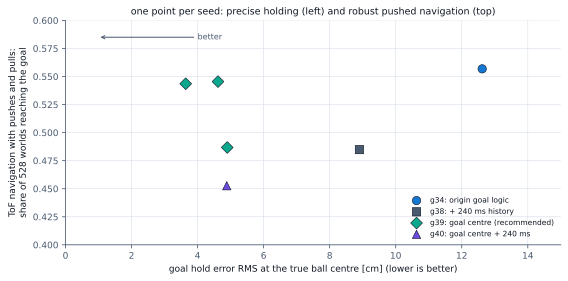
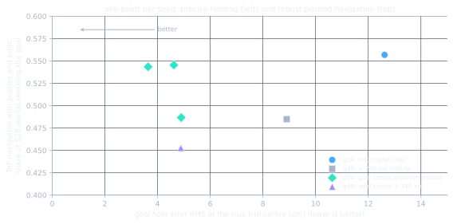
g39_goalcentre_s0: the S113 recipe (LQR plus a PPO residual with adaptive authority 0.15 / 0.3, the goal dead band, trained for 200M steps with the motion layer) with all goal logic on the true ball centre and the standard 80 ms history. It is the default bundle of the ROS 2 bridge. More
g40 (the same plus 240 ms of history) is the alternative where flat-ground goal accuracy and fewer calm-condition falls matter more than navigation under disturbance. There is no physical robot; nothing here has been tested on hardware.
Details and protocol
The pushed-navigation spread over the g39 seeds (0.49 to 0.55) is noted, not hidden.
The dead band on the true ball-centre speed: no measured change
Result. Over three seeds, g41 (the g39 recipe with the dead band on the ball-centre speed) stays inside the g39 seed spread: hold error 4.3 / 3.6 / 4.8 cm against 3.6 / 4.6 / 4.9 cm (S122). The recommended controller stays g39_goalcentre_s0; g41 is an equivalent alternative.
Details and protocol
The second finding of the ROS 2 parity work: the adaptive-authority dead band of every run, g39 included, compares the ball body-origin speed with 0.05 m/s. That speed swings with the ball's rotation; while rolling at 0.84 m/s it differs from the true ball-centre speed by 0.27 to 0.35 m/s (median), whereas the corrected centre velocity matches a finite-difference check to 5 mm/s (S122). A real robot can only estimate the centre speed, so the deployment core feeds that instead, and near zero commands its authority can switch at different moments than in training. train_dev.py --db-centre (off by default) fixes it; g41 is the g39 recipe plus the fix. Seed 0 (its last 0.25 percent of the learning-rate schedule missing because a session restart killed the run) is indistinguishable from g39 on every number: flat goal-test falls 0.085, hold error 4.3 cm, ToF navigation success 0.860 (g39 over three seeds: 0.87 to 0.89). The fix is for consistency between training and deployment, not a measured gain. Seeds 1 and 2 have since finished and agree with seed 0 (S122).
11 Unseen robot designs
The LQR base is what carries a policy to a robot it never saw
Result. The LQR-based controllers keep 0.61 to 0.71 goal success on the larger robot; pure learning with the retainer, the most robust controller on its training designs, collapses to 0.09 to 0.15. The tenth-torque design is motor limited for every controller (at most 0.30), and training on it does not help (0.29 and 0.26); training on 12 designs does raise the unseen larger robot to 0.89 and 0.75.
A controller for a real robot must work on a body whose parameters are only approximately known.
Unseen robot designs. Engine: Warp GPU (MuJoCo-Warp 3.17, float32), corrected for the S69 stale-subtree-mass error. Domain randomisation: on at scale 1. Observation noise: on. Worlds per cell: 160 per design (16 per terrain kind). Seeds: one per row as listed (two for the 12-design runs). Protocol: goal task of Table 2 on two designs outside the 11 training designs: s1.5 (robot scaled 1.5 times, ball radius 13.5 cm) and tau3 (wheel torque limit one tenth of nominal); the 12-design runs include tau3 in training, so for them only s1.5 is unseen.
| Policy | Trained on tau3 | Undisturbed: s1.5 (larger robot, unseen) | tau3 (one tenth torque) | Pushes + pulls: s1.5 | tau3 |
|---|---|---|---|---|---|
| then-recommended: LQR + residual 0.25, retainer g18_ret_rs025_s1, seed 1 | no | 0.71 | 0.30 | 0.66 | 0.15 |
| LQR + residual 0.5, no retainer g12_dr175_s1, seed 1 | no | 0.69 | 0.15 | 0.61 | 0.12 |
| pure learning, retainer g16_pure_ret100_s1, seed 1 | no | 0.09 | 0.00 | 0.15 | 0.00 |
| LQR + residual 0.25, retainer, 12 designs g21_ret_rs025_tau3_s0, seed 0 | yes | 0.89 | 0.29 | 0.76 | 0.17 |
| LQR + residual 0.25, retainer, 12 designs g21_ret_rs025_tau3_s1, seed 1 | yes | 0.75 | 0.26 | 0.66 | 0.21 |
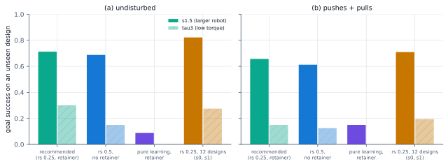
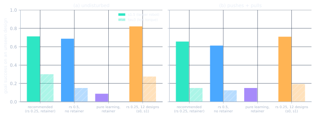
Methods note: an earlier version of this evaluation computed the design vector relative to the first loaded design instead of the nominal design used in training; it was fixed and re-run, and only the re-run is shown.
More
(4) Choose the ball radius for the steps that must be climbed: about 3.4 to 4.2 times the tallest step (chapter 9), and keep ball-floor friction high.
Details and protocol
Two designs outside the 11 training designs were held out: s1.5, the robot scaled 1.5 times (ball radius 13.5 cm, with its own planar model so the LQR adapts, commands Froude-scaled with the square root of the size), and tau3, a wheel torque limit of one tenth of nominal. Table 24 and Figure 12 show four controllers on them.
12 Perception
A depth sensor given to the balance policy does not help, as posed
Result. The depth sensor gives no gain over the blind control: 0.60 against 0.60 undisturbed, 0.29 against 0.28 disturbed, within 0.03 at every randomisation scale; on top of the then-recommended controller (g18_ret_rs025) it is 0.74 and 0.43 against 0.74 and 0.43 for the same recipe without the sensor (g18 seeds at friction 0.001, the matched comparison). Edge-focused starts alone do not move the baseline either.
Could the balance policy itself use a terrain sensor?
Depth sensor against blind control on the corrected engine. Engine: Warp GPU (MuJoCo-Warp 3.17, float32), corrected for the S69 stale-subtree-mass error. Domain randomisation: on (flat error column: off). Observation noise: on (flat error column: off). Worlds per cell: 176 per terrain kind (1760 per cell); 64 for the flat column. Seeds: one seed per arm (seed 0), the reference rows are the two seeds of the ramped recipe. Protocol: goal task of Table 2 at DR scales 1, 1.75 and 2.5; the per-kind columns are undisturbed success at scale 1; tile velocity task at 0.3 m/s; both arms are the ramped recipe plus --edge-focus 0.5 and differ only by the depth sensor.
| Policy | Goal success DR 1: undisturbed / disturbed | DR 1.75 | DR 2.5 | Median time [s] | step up | stairs | bump | Tile velocity falls: undisturbed / disturbed | Flat error at 0.9 m/s |
|---|---|---|---|---|---|---|---|---|---|
| depth sensor (18x14, head mount) + edge starts g15_edge_depth_s0, seed 0 | 0.60 / 0.29 | 0.53 / 0.26 | 0.45 / 0.18 | 2.36 | 0.36 | 0.44 | 0.27 | 0.56 / 0.73 | 0.044 |
| blind control + edge starts g15_edge_blind_s0, seed 0 | 0.60 / 0.28 | 0.54 / 0.23 | 0.47 / 0.19 | 2.30 | 0.38 | 0.41 | 0.28 | 0.53 / 0.73 | 0.046 |
| reference: ramped recipe, no edge starts g12_dr175_s0, seed 0 | 0.58 / 0.29 | 0.54 / 0.25 | 0.45 / 0.19 | 2.44 | 0.31 | 0.44 | 0.26 | 0.54 / 0.71 | 0.057 |
| reference: ramped recipe, no edge starts g12_dr175_s1, seed 1 | 0.60 / 0.30 | 0.56 / 0.25 | 0.47 / 0.19 | 2.33 | 0.39 | 0.47 | 0.20 | 0.53 / 0.71 | 0.041 |
Table 28: Depth sensor on top of g18_ret_rs025
Depth sensor on top of the then-recommended controller. Engine: Warp GPU (MuJoCo-Warp 3.17, float32), corrected for the S69 stale-subtree-mass error. Domain randomisation: on (flat column: off). Observation noise: on (flat column: off). Worlds per cell: 176 per terrain kind (1760 per goal or tile cell); 64 per flat cell. Seeds: one seed for the depth arm, three for the blind then-recommended controller. Protocol: eval_battery.py with the 100 deg arrestors in training and evaluation; the depth arm also uses edge-focused starts.
| Policy | Goal success undisturbed, DR 1 / 1.75 / 2.5 | Goal success pushes + pulls, DR 1 / 1.75 / 2.5 | Tile velocity falls undisturbed / disturbed (DR 1) | Step-up falls (velocity task) | Flat achieved / command |
|---|---|---|---|---|---|
| then-recommended + depth sensor (18x14) + edge starts g20_ret_rs025_depth_s0, seed 0 | 0.74 / 0.69 / 0.63 | 0.43 / 0.38 / 0.31 | 0.35 / 0.54 | 0.55 | 0.96 to 0.99 |
| then-recommended, blind g18_ret_rs025_s0, seed 0 | 0.71 / 0.68 / 0.60 | 0.42 / 0.36 / 0.29 | 0.34 / 0.55 | 0.61 | 0.99 to 1.01 |
| then-recommended, blind g18_ret_rs025_s1, seed 1 | 0.76 / 0.72 / 0.66 | 0.43 / 0.39 / 0.32 | 0.35 / 0.56 | 0.62 | 0.98 to 1.00 |
| then-recommended, blind g18_ret_rs025_s2, seed 2 | 0.76 / 0.71 / 0.63 | 0.44 / 0.41 / 0.32 | 0.36 / 0.55 | n/a | 0.90 to 0.99 |
For completeness, Table 29 keeps the pretraining of a depth encoder from earlier work: it predicts the height grid ahead from the noisy depth image with R2 0.60, weakest in the row nearest the ball.
Table 29: What a pretrained depth encoder can predict
What a pretrained depth encoder can predict. Engine: Warp GPU (MuJoCo-Warp 3.17, float32). Domain randomisation: on in the data collection (see the caveat). Observation noise: on (depth zone noise 0.5 % of range, 2 % dropout). Worlds per cell: 606k frames from 2048 worlds, 11 designs; validation = 10 % of worlds, split by world. Seeds: 1. Protocol: supervised regression of the height grid ahead and rise/drop hazards from an 18x14 simulated depth image; the driver policy is g2_goal_s0. Caveat: the frames were collected by a policy running on the engine before the S69 fix (stale subtree mass under mass randomisation). The metrics describe depth-to-height prediction, which does not depend on that artefact, but the frame distribution does.
| Encoder | R2 (7x5 height grid) | MAE [cm] | rise ≥ 2 cm F1 | drop ≥ 2 cm F1 | R2 by forward row (0.1 ... 1.3 m) |
|---|---|---|---|---|---|
| mean baseline | -0.00 | 3.87 | 0.00 | 0.00 | -0.00 -0.00 -0.00 -0.00 -0.00 -0.00 -0.00 |
| proprio only | 0.02 | 3.97 | 0.25 | 0.20 | 0.04 0.05 0.04 0.02 -0.01 -0.02 -0.01 |
| depth+proprio | 0.55 | 2.19 | 0.62 | 0.67 | 0.13 0.42 0.61 0.69 0.70 0.68 0.64 |
| depth only policy shaped | 0.60 | 1.93 | 0.70 | 0.73 | 0.17 0.47 0.68 0.74 0.74 0.71 0.67 |
Details and protocol
The test is a controlled pair: the ramped recipe with edge-focused starts (half of the episodes begin just before a feature), trained once with an 18 by 14 head-mounted depth sensor learned end to end and once blind, otherwise identically, one seed each. Table 27 compares them; Table 28 repeats the test on top of g18_ret_rs025 (authority 0.25, with the retainer).
One seed per arm. Chapter 8 explains why: the falls above the traction limit cannot be removed by looking ahead, and the reward never paid the policy for slowing before a feature, and slowing before a feature buys little once the robot is given time to reach it (chapter 8, Table 36: 0.03 to 0.05 of obstacle falls); chapter 10 shows where sensing pays most, in a navigation layer that routes around obstacles.
Its frames came from a policy on the affected engine, and no policy in this study uses it.
13 Conclusions and limitations
What the study supports, and what it does not
- Model-based structure beats pure learning on accuracy and goals. On the clean flat world the LQR is 9 to 16 times more accurate than pure learning, and the LQR plus a bounded residual keeps that accuracy; on the goal task it reaches 0.58 against 0.48.
- Robustness is not improved by any training recipe tried; a mechanical change is. Wider randomisation, a softer base, a larger authority, a higher fall penalty, a push curriculum and pure learning all leave the pushes-and-pulls success near 0.3 and the tile velocity falls near 0.55.
- Falls are derailing, and a ball retainer fixes most of them. The body leaves the ball at about 15 degrees of tilt with torque to spare; passive arrestors at 100 degrees raise goal success with pushes and pulls from 0.29 to 0.47 and cut tile velocity falls from 0.53 to 0.32.
- Recommended controller up to S109: LQR plus residual at authority 0.25, trained with the retainer; checkpoints g26 on the corrected contact model (since extended, see the next item).
More
The three g26 seeds track speed closely (0.85 to 1.00 of the command; 0.90 to 1.01 for the g18 seeds at 0.001) and keep most of the retainer's robustness (goal success 0.74 undisturbed, 0.45 with pushes and pulls; g18 at 0.001: 0.74 and 0.43; 400M steps gives no gain); they have the only reproducible standing number and equal the g18 seeds on the obstacle course on the same contact model. Looser controllers are more robust on the training designs but track 66 to 90 percent of the command.
- Recommendation from S113 to S120: the same base with a motion layer, adaptive authority and a goal dead band (chapter 10b). Trained and run with the motion layer, the g34 checkpoints (three seeds) fall in 0.09 to 0.11 of flat-tile goal tests against 0.15 for g26, reach 0.77 to 0.79 of battery goals undisturbed and 0.51 to 0.52 with pushes and pulls, and in ToF navigation cut the heading wobble by about a quarter.
More
A higher tracking reward, hard-design weighting, 400M steps and harder training pushes did not improve on it (two or three seeds each). What remains is physical: three hard designs (light ball, heavy body, weak motors) and sustained pulls above about 3 N.
- Recommendation now: the same recipe with the goal logic on the true ball centre (
g39_goalcentre_s0, chapter 10c). The goal logic had measured a point that circles the ball centre as the ball rolls (found by the ROS 2 parity work); with the fix the three g39 seeds hold the goal 3.6 to 4.9 cm from the target against 11.4 to 13.6 cm for g34, keep its battery robustness and reach 0.87 to 0.89 of goals in ToF navigation.More
A 240 ms history (g40) makes the robot calmer on flat ground but worse at navigating under pushes (0.45 against 0.49 to 0.55), so it is the alternative, not the default. A longer memory does not lift the pull limit.
- Long-horizon flat falls are design specific; the earlier standing numbers were a simulator artefact. Every 20 s standing fall rate published before the friction correction was a float32 blow-up of the 1000 to 1 anisotropic wheel-ball friction, not a controller result (chapter 8).
More
At free-rolling friction 0.01 the g26 checkpoints stand for 20 s with 0.02 to 0.04 falls over 11 designs and drive at 0.3 m/s with 0.06 to 0.07; the falls that remain are the quarter-mass ball (kb025, which unseats) and the four-times base mass (bal4). Whether the velocity integral matters for standing is unverified; a retrained set at 0.01 is pending.
- Obstacle falls on the enclosed tiles are a traction limit. Up-steps and bumps above about 0.29 times the ball radius cannot be climbed with ball-floor friction near 1; a larger ball crosses them, and a perfect height map given straight to the policy does not help the small one.
More
Speed matters too on the corrected contact model (a later correction, S100): falls rise from 0.28 at 0.1 m/s to 0.51 at 0.9 m/s; a terrain-aware speed layer buys only 0.03 to 0.05 of obstacle falls, mostly on stairs, once slowed robots are given time to reach their feature (an earlier 15 s test that seemed to halve them was an exposure artefact); the earlier "speed does not matter" reading was partly the standing blow-up, and the sensor-based speed layer is pending.
- Ball size sets the step size (chapter 9). One recipe trained on four robot sizes (two seeds) shows the fall curve against step height moving with the ball radius, with the 50 percent point at about 0.24 times the radius (0.17 to 0.29 over sizes and features) because floor friction is randomised (the nominal limit 0.29 r holds at friction 1).
More
Rule of thumb: ball radius about 3.4 to 4.2 times the tallest step, then arrestors. The 4.5 cm-ball robot, never trained on, fails even on flat ground.
- Where obstacles can be avoided, terrain sensing is decisive. With g26_ret_rs025_mu01_s1 frozen and a planner on top (corrected contact model), falls drop from 0.91 blind to 0.07 with a perfect map, and smooth navigation with a forward ToF aimed at the target reaches 0.84 of goals behind unclimbable blocks, within 0.05 of the perfect map; under pushes and pulls about half.
More
Mount and pitch matter more than resolution. The remaining failures are push recoveries near obstacles, a balance-controller limit; training with the planner in the loop changed nothing on two seeds. With the motion-layer recipe ToF navigation reaches 0.88 (perfect map 0.94) with a quarter less heading wobble, and a blind robot with a contact escape layer reaches 0.63 (chapter 10b).
- The LQR base carries policies to unseen robot designs. The LQR-based controllers keep 0.61 to 0.71 on the larger robot while pure learning collapses (0.09 to 0.15); the tenth-torque design is motor limited for every controller.
- The depth sensor does not help the balance policy as posed (twice, with and without the retainer, one seed each).
- A methodological lesson. After randomising per-world masses in a batched model, recompute the derived mass properties; and record where failures happen (the lessons page collects these).
More
The flat benchmark uses one nominal design and 64 worlds per row (32 for the LQR calibration), and its fall column is the post-correction re-run; the tile evaluations use 16 worlds per design and kind; most recipes have one to three seeds; most evaluations use the training designs (two held-out designs and a held-out terrain layout were tested for a few controllers); there is no CPU re-evaluation of any tile policy; floor materials are plausible, not measured.
Rollouts
One world per clip, failures included
Each clip is one world simulated on the GPU engine and drawn with the CPU renderer on a checkerboard floor. Clips are chosen by scenario, not by outcome, so failures are kept and named. One world is an anecdote: the tables carry the statistics. Older clips from the CPU study are on the Videos page.
LQR + residual, goal on an 11 degree ramp
g12_res_s0 reaches the goal on the ramp; no fall in 8 s. Ramp-up goals are the residual's best kind (success 0.74 and 0.69 over 176 worlds each).
LQR + residual, goal across a 2.3 cm step (falls)
g12_res_s0 falls at the step after 3.0 s. Step-up goals succeed in about one world in three (0.33 and 0.28 over 176 worlds each), so most steps end like this one.
LQR + residual, goal on a flat tile (falls)
g12_res_s0 falls after 4.8 s on a flat tile. Flat-tile goal success is about 0.6 to 0.7, so a fall here is not rare; it is shown because failures are part of the record.
Same policy, flat tile, arrestors off (falls)
g12_dr175_s0 without arrestors: the body derails off the ball and the robot falls after 4.8 s.
Same policy, flat tile, arrestors on
The same policy and world with the 100 deg arrestors added at evaluation (zero-shot): no fall in 8 s.
Same policy, 2.3 cm step, arrestors off (falls)
g12_dr175_s0 without arrestors falls at the step after 2.9 s.
Same policy, 2.3 cm step, arrestors on (falls later)
The same policy and world with arrestors falls too, later (5.5 s): the retainer prevents derailing, not every fall.
Pure learning on a step-up, without arrestors (falls)
Pure learning trained without arrestors (g12_pure_s0) falls at the 2.3 cm step after 2.8 s.
Pure learning on a step-up, with arrestors
Pure learning trained with the arrestors (g16_pure_ret100_s1, a different policy from the clip above) crosses toward the goal and does not fall in 8 s.
Then-recommended controller: step-up toward a goal
LQR + residual at authority 0.25 trained with the arrestors (g18_ret_rs025_s1) climbs the 2.3 cm step toward the goal and holds for 8 s.
Then-recommended controller: 0.6 m/s up an 11 degree ramp (known weakness, falls)
The same controller following a 0.6 m/s command up an 11 degree ramp lags the command (0.40 m/s at 2.8 s) and falls at 5.6 s. A known weakness, shown as a single clip, not a statistic.
Navigation, blind: falls into the block
The then-recommended balance controller driven straight at the goal with no terrain information rolls onto the 8 cm block and falls.
Navigation with the perfect height map: goes around the block
The same frozen controller with the wavefront planner on the privileged height map steers around the block end and reaches the goal.
A 5 cm step, 6.75 cm ball: falls
The scale policy on the 0.75-scale robot (ball radius 6.75 cm, predicted limit 2.0 cm) drives into a 5 cm up-step at 0.26 m/s, stalls against the edge and falls at 6.6 s.
The same 5 cm step, 18 cm ball: crosses
The same policy on the 2-scale robot (ball radius 18 cm, predicted limit 5.2 cm) climbs the same 5 cm step and drives on; no fall in the 8 s clip.
Navigation with the forward ToF sensor (18 x 14): hesitates, then arrives
The same controller and planner with the head-mounted ToF sensor hesitates while its obstacle memory fills in, then goes around the block and reaches the goal at 16.5 s. A single clip.
Data
Where the numbers come from
Every table, figure and number in the prose of this page is regenerated by python site/build_data.py from the result files in outputs/study/warp_ppo/<run>/ (battery.json, eval2_*.json, nav*.json, fallcause*.json, log.csv) and the files named in the captions; site/data/study.json holds them all. docs/research/site_crosscheck.md lists every number checked against the lab log and the source code, the discrepancies found, and where the data is thin.